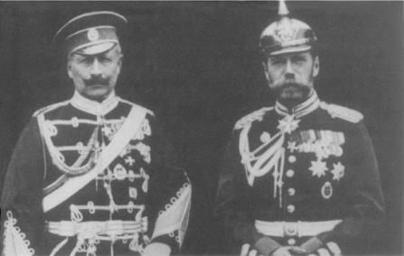

İmparator II. Wilhelm ve Çar II. Nikola
XX. yüzyılın ilk on yılının sonunda, yüzyıl boyunca barışı koruyan Avrupa Konferans düzeni artık yoktu. Büyük Devletler, elli yıl sonraki Soğuk Savaş’ın yapısına benzer şekilde kemikleşmiş iki güç blokunun oluşmasına yönelen iki kutuplu bir çatışmanın içine kendilerini anlamsız bir körlükle atmışlardı. Ancak bir önemli fark vardı; nükleer silahlar çağında savaştan kaçınmak, en önemli, belki de başlıca dış politika amacıydı. Oysa XX. yüzyılın başlangıcında savaşlar, hâlâ saçma bir nedenle başlatılabilirdi. Gerçekten de bazı Avrupalı düşünürler, belli aralarla kan dökülmesinin, temizleyici etkisi olduğunu bile savundular ki, Birinci Dünya Savaşı, bu saf görüşün geçersizliğini vahşi bir şekilde gösterdi.
Yıllardan beri tarihçiler, Birinci Dünya Savaşı’nın çıkmasından kimin sorumlu olduğunu tartışmaktadırlar. Ancak hiçbir ülke, tek başına felakete doğru bu çılgın yarışın sorumlusu olarak belirlenemez. Büyük devletlerden her biri, kendi dar görüşlülük ve sorumsuzluk payını kullanmışlar ve Avrupa’nın ortak hafızasına girdikten sonra bir kez daha yapılması olanaksız olan bir şeyi, büyük kaygısızlıkla yeniden yapmıştır. Pascal’in Pensées’indeki “Görmemizi önlemek için önümüze bir şey koyduktan sonra, dikkatsizce uçuruma doğru koştuk” uyarısını unutmuşlardı.
Kuşkusuz suçlanacak çok şey vardı. Avrupa ulusları, genel bir savaşın modern teknoloji ve kitlesel seferberlikler dolayısıyla kendi güvenliklerine ve Avrupa uygarlığına en büyük tehdidi oluşturduğunu anlamadan, güç dengesini, silahlanma yarışına döndürdüler. Her ne kadar Avrupa uluslarının, izledikleri politikalar nedeniyle bu felâkette payları varsa da, Almanya ve Rusya, doğaları itibariyle her türlü ölçülü olmak duygusunu ortadan kaldırmışlardır.
Tüm Almanya’nın birleşmesi süreci boyunca, bu olayın güç dengesine etkisi üzerinde hemen hemen hiç durulmamıştır. 200 yıl boyunca, Almanya Avrupa savaşlarının başlatıcısı değil, kurbanı olmuştur. Otuz Yıl Savaşları’nda Almanya, bütün nüfusunun yüzde otuzu gibi çok yüksek bir sayısını kaybetmişti ve XVIII. yüzyılın hanedan ve Napoleon savaşlarının bütün önemli çarpışmaları, hep Alman toprakları üzerinde yapılmıştı.
Bu nedenle, birleşmiş Almanya’nın bu trajedilerin yeniden yaşanmasını önlemeyi amaç edinmesi kaçınılmazdı. Fakat, yeni Alman devletinin bu soruna askeri bir problem olarak yaklaşması veya Bismarck’tan sonraki Alman diplomatlarının, dış politikayı bu kadar kabadayıca ve iddialı bir şekilde yürütmesi kaçınılmaz değildi. Büyük Frederick’in Prusya’sı, büyük devletlerin en zayıfı iken, birliğin sağlanmasından sonra Almanya en güçlü devlet oldu ve komşularının huzurunu kaçırdı. Bu yüzden, Avrupa Düzenine katılmak için dış politikasında özellikle ihtiyatlı olması gerekirdi.{213} Ne yazık ki, Bismarck’tan sonra ılımlılık, Almanya’da en az bulunan bir nitelik haline geldi.
Alman devlet adamlarının, çıplak güç konusunda bu kadar tutkulu olmasının nedeni, diğer ulus-devletlerin aksine, Almanya’nın bütünleştirici bir felsefi çerçeveye sahip olmamasıydı. Avrupa’nın geri kalan ülkelerinde modern ulus-devlete şekil veren ideallerin hiçbirisi, Bismarck’ın kurduğu yapıda yoktu: Ne Büyük Britanya’nın geleneksel özgürlüklere önem vermesi, ne Fransız Devrimi’nin evrensel özgürlük isteği ve ne de Avusturya’nın iyi huylu evrensel emperyalizmi. Aslında Bismarck’ın Almanya’sı, bir ulus-devletin beklentilerini de temsil etmiyordu; çünkü Almanya, Avusturyalı Almanları isteyerek dışarda bırakmıştı. Bismarck’ın “Reich”ı, başlıca amacı kendi gücünü artırmak olan daha büyük bir Prusya için bir kandırmacaydı.
Entelektüel köklerden yoksun olması, Alman dış politikasının amaçsızlığının başlıca nedenidir. Bu kadar uzun süre topraklarının Avrupa’nın başlıca savaş alanı olmasının anısı, Alman ulusunda iyice yerleşmiş bir güvensizlik duygusu yarattı. Her ne kadar Bismarck’ın imparatorluğu şimdi kıtanın en güçlü devleti ise de, Alman liderler, her zaman belirsiz bir şekilde tehdit edildiklerini hissederlerdi. Bunu, kavgacı nutuklarla birlikte, askeri yönden hazırlıklı olma tutkuları da göstermektedir. Alman askeri planlamacıları, her zaman Almanya’nın bütün komşuları ile aynı anda savaşa tutuşacağı varsayımına göre hareket etmişler. Bu en kötü senaryoya göre kendilerini hazırlayarak, bunun gerçek olmasına da yardımcı oldular. Bütün komşularının oluşturduğu koalisyonu yenecek kadar güçlü olan bir Almanya’nın, bu komşularından herhangi birini ezebilecek durumda olacağı açıktı. Sınırlarındaki çok büyük askeri yığınakları gören Almanya’nın komşuları, ortak savunma için bir araya geldiler ve Almanya’nın güvenlik arayışını, onun güvenlikten yoksun olmasının nedeni haline dönüştürdüler.
Akıllı ve ölçülü bir politika, korkunç tehlikeyi erteleyebilir ve belki de önleyebilirdi. Ancak Bismarck’ın yerine gelenler, onun gösterdiği ılımlılığı bırakarak gittikçe artan bir şekilde acı kuvvete dayanır oldular. En çok sevdikleri slogan şuydu: Almanya, bir çekiç olarak hizmet edecektir, yoksa Avrupa diplomasisinin örsü olarak değil. Ulusal benliğini bulabilmek için bu kadar enerji harcayan Almanya, sanki yeni devletin hangi amaca hizmet edeceğini düşünmeye zaman bulamamıştı. Almanya, kendi ulusal çıkarı kavramını geliştirmeyi asla başaramamıştır. O anın heyecanı ile sürüklenen ve yabancıların psikolojisine karşı olağanüstü bir hassasiyetsizliği olan Bismarck’tan sonraki Alman liderleri, kararsızlıkla haşinliği birleştirerek ülkelerini ilk önce yalnızlığa, sonra da savaşın içine atmışlardır.
Bismarck, Alman gücünün açıkça ortaya konmasını önlemek için çok çaba harcamıştır. Birçok ortağını zapt etmek amacıyla karışık ittifaklar sistemini kullanmış ve görünmeyen uyumsuzluklarının bir savaşa dönüşmesini önlemeğe çalışmıştı. Bismarck’ın yerine gelenlerin, böyle karışık işler için ne sabrı, ne de kurnazlığı vardı, İmparator I. Wilhelm 1888’de ölünce, oğlu Frederick (ki liberal davranışları Bismarck’ı çok endişelendirmişti), gırtlak kanserine yenilinceye kadar sadece doksan sekiz gün ülkeyi yönetti. Onun yerine oğlu II. Wilhelm geçti. Aşırı duygusal davranışları, gözlemcilerde, Avrupa’nın en güçlü devletinin yöneticisinin, olgunlaşmamış ve kararsız bir kişi olduğu şeklinde endişeler yarattı. Psikologlar, Wilhelm’in huzursuz kişiliğini kabadayılığını, doğuştan kolunun sakat olmasına bağlamaktadırlar ki, bu durum yüksek bir askeri geleneğe sahip olan Prusya kraliyet ailesi için ağır bir darbe idi. 1890’da genç ve aceleci imparator, bu kadar büyük şahsiyetin gölgesi altında ülkeyi yönetmeyi reddederek Bismarck’ı görevinden aldı. Bundan sonra Avrupa barışı için en önemli şey, Kaiser’in diplomasisiydi. Winston Churchill, Wilhelm’in ruh halini alaycı bir üslupla şöyle ortaya koydu:
“Yalnızca cakalı bir yürüyüş, poz atma ve çekilmemiş kılıcı şakırdatma. Bütün istediği kendini Napoleon gibi hissetmek ve onun savaşlarını yapmadan onun gibi olmak. Kesinlikle bundan daha azı yetmezdi. Eğer bir volkanın tepesi isen, yapabileceğin en az şey biraz duman çıkarmaktır. Böylece Kaiser de bütün uzaktan seyredenlere duman çıkardı, gündüz bir bulut sütunu, geceleri ateş parlaması gösterdi; rahatsız olan gözlemciler de yavaşça ve emin olarak ortak savunma için bir araya geldiler.
...fakat bütün bu poz ve süslerin altında, kendisini tarihe ikinci Büyük Frederick olarak geçirmek isteyen çok sıradan, boş ama, iyi niyetli bir adam vardı.”{214}
Kaiser’in en çok istediği şey, Almanya’nın öneminin ve hepsinden önemlisi gücünün, uluslararası alanda tanınması idi. Kendisinin ve çevresinin Weltpolitik veya küresel politika dediği politikayı, bu terimi tanımlanmadan veya bunun Alman ulusal çıkarları ile ilişkisini açıklamadan uygulamaya çalıştı. Sloganların gerisinde entelektüel bir boşluk yatıyordu; ve haşin dil, iç boşluğu maskeliyordu ve geniş sloganlar ise, ürkekliği ve yön duygusunun noksanlığını örtüyordu. Harekette kararsızlıkla birlikte öğünme alışkanlığı, iki yüzyıllık taşralılık duygusunun Almanlara bıraktığı mirastı. Alman politikası akıllı ve sorumlu olsaydı bile, Alman devinin mevcut uluslararası çerçeveye entegre edilmesi çok zor olurdu. Fakat kişiliklerin ve iç kurumların karışımı böyle bir bütünleşmeyi önledi ve onun yerine, Almanya’nın başına, korktuğu her şeyi getirmekte uzmanlaşan pervasız bir dış politika getirdi.
Bismarck’ın görevden alınmasından sonraki yirmi yılda, Almanya ittifaklarını olağanüstü bir çabayla tersine çevirdi. 1898’de Fransa ve Büyük Britanya, Mısır yüzünden savaşın eşiğinde idiler. XIX. yüzyılın büyük bölümünde Büyük Britanya ile Rusya arasındaki düşmanlık uluslararası ilişkilerde sürekli bir faktördü. Çeşitli zamanlarda, Büyük Britanya, Rusya’ya karşı devamlı müttefik arayışı içinde oldu ve Japonya ile anlaşmadan evvel Almanya’yı da yokladı. Kimse Büyük Britanya, Fransa ve Rusya’nın aynı tarafta olabileceğini düşünemezdi. Oysa on yıl sonra, Almanya’nın ısrarlı ve tehdit edici diplomasisi sonucunda bu da gerçekleşti.
Manevralarının karmaşıklığına rağmen, Bismarck, hiçbir zaman, güç dengesinin geleneklerinin de ötesine gitme girişiminde bulunmamıştı. Yerine gelenler, açıkça güç dengesinden memnun değillerdi ve anlamadıkları şey, kendi güçlerini büyüttükçe, Avrupa denge sisteminin doğasına uygun olarak karşı tarafın bunu karşılayacak koalisyonlar kurması ve silah yığınağı yapması idi.
Alman liderler, diğer ülkelerin, halen Avrupa’nın en güçlü ulusu olan ve bir Alman hegemonyası korkusu saçan ulusuyla ittifak yapmak istememelerine kızıyorlardı. Alman liderleri, komşularına kendi kuvvetlerinin sınırlarını ve Alman dostluğunun yararlarını kabul ettirmek için en iyi yolun kabadayı taktikleri olduğu kanısındaydılar. Bu sataşma şeklindeki yaklaşım, tam tersi bir sonuç verdi. Bismarck sonrası Alman liderleri, kendi ülkeleri için tam güvenliğe ulaşmaya çalışırken, diğer tüm Avrupa uluslarını tam güvensizlikle tehdit ettiler ve hemen hemen otomatik olarak karşı koalisyonları harekete geçirdiler. Bir yere egemen olmak için diplomatik bir kestirme yol yoktur, tek yol savaştır. Bu dersi, Bismarck sonrası köylü Alman liderleri ancak küresel bir felaket olduğunda öğrendiler.
Anlaşılmayan şey şudur ki, imparatorluk Almanya’sının tarihinin büyük bölümünde, barış için başlıca tehdidin, Almanya değil, Rusya olduğu düşünülmüştür, İlk önce Palmerston sonra da Disraeli, Rusya’nın Mısır ve Hindistan’a sızmak istediğine inanmıştı. 1913’te Alman liderleri arasında, Rus ordularının ayaklarının altında ezilecekleri korkusu o kadar yaygındı ki, bu korku, bir yıl sonraki kaderleri belirleyecek olan bu çatışmaya büyük katkıda bulundu.
Gerçekte, Rusya’nın bir Avrupa imparatorluğu peşinde olduğu şeklindeki korkuyu haklı çıkaracak herhangi bir objektif kanıt yoktu. Rusya’nın böyle bir savaş hazırlığı içinde olduğu hakkındaki Alman askeri gizli servisinin iddiaları, doğru olmakla birlikte konu dışıdır. Her iki ittifakın bütün üyeleri, yeni demiryolu teknolojisi ve seferberlik planlarıyla doluydular ve devamlı olarak mevcut sorunların hiçbirisiyle kıyas kabul etmeyen askeri hazırlıklarla uğraşıyorlardı. Fakat bu şevkle yapılan hazırlıklar, tanımlanabilen herhangi bir hedefle ilgili olmadığından, büyük, hatta dev ihtirasların belirtisi olarak yorumlandılar. 1900-1909 arası Alman Şansölyesi olan Prens von Bülow, Büyük Frederick’in görüşlerini benimseyerek şöyle dedi: “Prusya’nın bütün komşuları arasında güç ve konum bakımından en tehlikelisi, Rus İmparatorluğu’dur.”{215}
Bütün Avrupa, toprak genişliği ve inatçılığı ile Rusya’yı kesinlikle ürkütücü bir ülke olarak gördüler. Bütün Avrupa ülkeleri, tehdit ve karşı tehdit yolları ile, kendilerini büyük gösterme telaşı içine düşmüşlerdi. Fakat Rusya, ancak daha üstün bir kuvvetle ve genellikle savaşlarla durdurulabilen tamamen kendisine özgü bir ritimle genişlemeye devam etmiştir. Birçok kriz devamınca, akla uygun bir uzlaşma, daima Rusya’nın erişebileceği bir yerde bulunmuştur. Ancak Rusya, genellikle taviz vermektense, yenilgi riskini göze almıştır. 1854 Kırım Savaşı’nda, 1875-1878 Balkan Savaşları’nda ve 1904 Rus-Japon Savaşı öncesinde hep böyle olmuştur.
Bu eğilimlerin bir açıklaması, Rusya’nın kısmen Avrupalı, kısmen de Asyalı olmasıdır. Batı’da Rusya, Avrupa Düzeni’nin bir üyesiydi ve güç dengesinin çok ayrıntılı kurallarına katılırdı. Fakat burada bile Rus liderleri, dengeye başvurmalarda genellikle çok sabırsız ve istekleri karşılanmadığı zaman da hemen savaşa girme eğilimindeydiler: Örneğin 1854 Kırım Savaşı başlangıcında, Balkan Savaşları’nda ve tekrar 1885’te Rusya neredeyse Bulgaristan’la savaşa tutuşuyordu. Orta Asya’da, Rusya güç dengesinin uygulanmadığı zayıf prensliklerle karşı karşıya idi ve Sibirya’da, Japonya ile karşılaşıncaya kadar, Amerika’nın meskûn olmayan topraklarda yayılması gibi, boş Asya topraklarında genişlemiştir.
Avrupa forumlarında, Rusya güç dengesi adına söylenen sözleri dinler, fakat onun kurallarına her zaman uymazdı. Avrupa devletleri, Türkiye ve Balkanlar’ın geleceğinin Avrupa Düzeni tarafından bir çözüme bağlanması gerektiği görüşünü savunurken, Rusya, bu sorunu, tek taraflı olarak ve kuvvetle halletme peşinde olmuştur. 1829 Edirne Antlaşması’nda, 1833 Hünkâr iskelesi Antlaşması’nda, 1853 Türkiye ile çıkan anlaşmazlıkta ve 1875-78 ve 1885 Balkan Savaşları’nda durum böyle idi. Rusya, kendisi bu işleri yaparken, Avrupa’nın başka tarafa bakmasını istemiş ve Avrupa bunu yapmayınca da kızmıştır. Aynı sorun, İkinci Dünya Savaşı’ndan sonra da çıkacak, Batılı müttefikler Doğu Avrupa’nın geleceğinin bir bütün olarak Avrupa’yı ilgilendirdiğini söylerken, Stalin, Doğu Avrupa’nın ve özellikle Polonya’nın Sovyetlerin nüfuz bölgesi içinde olduğunu ve bu sebeple onların geleceğinin Batılı demokrasilere danışılmadan kararlaştırılması gerektiği üzerinde ısrarla durmuştur. Sonunda Stalin, kendisinden önceki çarlar gibi tek taraflı hareket edecek, bununla beraber kaçınılmaz olarak bir Batılı kuvvetler koalisyonu, Rusya’nın askeri ilerlemesine direnmek için ve Rusya’nın komşuları üzerindeki zorlamalarını durdurmak için kurulacaktır. II. Dünya Savaşı sonrası dönemde, bu tarihi örneğin yeniden kendisini göstermesi bir kuşak sürecektir.
İlerleme halindeki Rusya’da sınır kavramı yoktu. Kendisine engel olunduğu zaman bunu hiç unutmuyor ve intikamını almak için uygun zamanı kolluyordu. XIX. yüzyılın büyük bölümünde Büyük Britanya’ya, Kırım Savaşı’ndan sonra Avusturya’ya, Berlin Kongresi’nden sonra Almanya’ya ve Soğuk Savaş boyunca Birleşik Devletler’e karşı tavrı böyle olmuştur. Sovyet dönemi sonrası yeni Rusya’nın, tarihi imparatorluğunun ve uydularının çöküşüne nasıl tepki göstereceği, dağılma şokunu atlattıktan sonra görülecektir.
Asya’da, Rusya’nın misyon duygusu, politik ve coğrafi engellerle daha da az sınırlandırılmıştı. XVIII. yüzyılın tamamında ve XIX. yüzyılın büyük bölümünde, Rusya, Uzakdoğu’da tek başına kalmıştır. Rusya, Japonya ile uğraşan ve Çin’le anlaşma yapan ilk Avrupa devleti olmuştur. Yeni topraklara yerleşen az sayıdaki göçmen ve askeri maceracılar tarafından gerçekleştirilen bu genişleme, Avrupa devletleri ile herhangi bir anlaşmazlık yaratmamıştır. Ara sıra Çin’le olan çatışmalar da önemli değildi. Asi kabilelere karşı yardımından dolayı Rusya yönetimine XVIII ve XIX. yüzyıllarda Çin tarafından geniş topraklar verilmiştir ve bu durum, o zamandan beri her Çin hükümetinin, özellikle de komünist hükümetin reddettiği bir dizi “eşit olmayan antlaşma” yapılmasına neden olmuştur.
Rusya’nın Asya topraklarındaki her yeni toprak işgali, yeni topraklar için iştahını daha da artırmıştır. 1903’te Rus Maliye Bakanı ve Çar’ın arkadaşı olan Serge Witte, II. Nikola’ya şöyle yazıyordu: “Çin’le muazzam büyüklükteki sınırımız ve bizim istisnai şekilde uygun durumumuz, Rusya tarafından Çin’in önemli bir kısmının yutulmasını yalnızca bir zaman meselesi haline getirmiştir.”{216} Osmanlı imparatorluğu ile olan soruna gelince, Rus liderleri, Uzakdoğu’nun kendi işleri olduğunu ve dünyanın geri kalan bölümünün müdahale hakkı olmadığı tavrını almışlardır. Rusya’nın bütün cephelerdeki ilerlemesi bazen aynı zamanda olmuştur; daha çok, yayılmanın en az riskli olduğu yerlere göre değişmiştir.
Rus İmparatorluğu’nun politika oluşturma mekanizması da, İmparatorluk’un ikili doğasını yansıtmaktadır. Rus Dışişleri Bakanlığı genellikle Batı üzerine uzman bağımsız memurların çalıştığı Başbakanlık’ın bir bölümüydü.{217} Çoğunlukla Baltık Almanlarından olan bu memurlar, Rusya’yı, politikası Avrupa Düzeni çerçevesinde uygulanması gereken bir Avrupa devleti olarak görürlerdi. Ancak bu bölümün rolü, Asya Bölümü tarafından tartışılırdı ki, bu daire de eşit şekilde bağımsız ve Rusya’nın Osmanlı İmparatorluğu’na, Balkanlar’a ve Uzakdoğu’ya karşı politikalarında, diğer bir deyişle Rusya’nın ilerlemekte olduğu her cepheden sorumluydu.
Başbakanlık Bölümü’nün aksine, Asya Bölümü Rusya’yı Avrupa Düzeni’nin bir parçası olarak kabul etmiyordu. Avrupa uluslarını, Rusya’nın isteklerinin gerçekleşmesine bir engel olarak gören Asya Bölümü, Avrupa uluslarını konunun dışında görmüş ve mümkün oldukça Rusya’nın amaçlarını, tek-taraflı antlaşmalar veya Avrupa’ya danışmadan başlatılan savaşlarla gerçekleştirme peşinde olmuştur. Avrupa, Balkanlar ve Osmanlı İmparatorluğu’nu ilgilendiren konuların Avrupa düzeni çerçevesinde çözülmesi konusunda ısrar ettikçe, sık sık anlaşmazlık çıkması kaçınılmaz olmuş ve Rusya’nın kızgınlığı, başkasının işlerine burnunu sokan devletler olarak gördüğü güçler tarafından engellenmekten dolayı artmıştır. Kısmen savunma, kısmen saldırı şeklinde olan Rus genişlemesi genellikle bir belirsizlik taşımış ve bu belirsizlik Batılılar arasında Rusya’nın gerçek niyetleri hakkında Sovyet döneminde de devam eden tartışmalara yol açmıştır. Rusya’nın gerçek maksadını anlamada devam eden bu güçlüğün nedeni, Rus hükümetinin komünist dönemde bile bir XX. yüzyıl süper gücünden çok, XVIII. yüzyıl otokratik sarayına benzer özellikler taşımasıdır. Ne imparatorluk Rusya’sı, ne de komünist Rusya, büyük bir dışişleri bakanı yetiştirmiştir. Nesselrode, Gorçakov, Giers, Lansdorf ve hatta Gromiko, başarılı ve yetenekli dışişleri bakanı olmalarına karşın, uzun vadeli bir politika üretme otoritesinden yoksun idiler. Hepsi de olumlu tepkisi için birçok temel iç sorunlar arasında mücadele etmek zorunda oldukları ve kolayca dikkati dağılan otokratın hizmetkârları durumundan biraz daha iyi bir konumdaydılar, İmparatorluk Rusya’sının, bir Bismarck’ı, Salisbury’si veya Roosevelt’i yoktu; kısacası dışişlerinin bütün yönleri üzerinde uygulama yetkisine sahip aktif bakanları yoktu.
Devletin başındaki Çar’ın hâkim bir kişiliğe sahip olduğu zaman bile, Rus politika üretme sisteminin otokratik özelliği, tutarlı bir dış politikanın gelişmesini önledi. Çar bir kez kendisi ile kolay çalışan bir dışişleri bakanı buldu mu, Nesselrode, Gorçakov ve Giers’de oldu gibi onu iyice benimserdi. Bakanlar arasında bu üçü XIX. yüzyılın büyük bölümünde hizmet vermişlerdir, ilerlemiş yaşlarında dahi, yabancı devlet adamları için çok değerli ve St. Petersburg’da görüşülmeye değer şahsiyetler olarak kabul edilirlerdi; çünkü Çar’a ulaşabilen tek resmi görevliler onlardı. Protokol başka bir kişinin Çar’la görüşmesini hemen hemen olanaksız yapıyordu.
Karar vermeyi daha da karışık hale getirmek için, Çar’ın yürütme gücü sık sık onun aristokratik hayat tarzı ile çatışıyordu. Örneğin Garanti Antlaşması’nın imzalanmasından hemen sonraki çok önemli dönemde, III. Aleksandr, 1887 Temmuzundan Ekimine kadar dört ay boyunca yatla gezmek, manevraları izlemek ve Danimarka’da karısının akrabalarını ziyaret etmek için St. Petersburg’dan uzak kaldı. Tek karar vericinin ulaşılmaz olması, Rus dış politikasının tökezlemesine yol açtı. Çar’ın politikaları genellikle yalnızca o anın heyecanına göre yürütülmekle kalmıyor, aynı zamanda ordu tarafından körüklenen milliyetçi dalgalanmalardan da büyük çapta etkileniyordu. Orta Asya’daki General Kaufmann gibi askeri maceracıların, dışişleri bakanlarına pek aldırdıktan yoktu. Bir önceki bölümde açıklandığı gibi, Gorçakov İngiliz büyükelçilerine Orta Asya hakkında çok az bilgisi olduğunu söylerken, büyük olasılıkla doğruyu söylüyordu.
1894-1917 arasında saltanat süren II. Nikola zamanında Rusya, keyfi kurumlarının bedelini ödemeye zorlandı. Nikola ilk önce Rusya’yı Japonya ile felaketli bir savaşa soktu ve sonra ülkesinin, Almanya ile savaşı kaçınılmaz hale getiren bir ittifak sisteminin tutsağı haline düşmesine izin verdi. Rusya’nın enerjisi, yayılmacılığa yöneltilip, dış anlaşmazlıklarla bu enerji tüketilirken, ülkenin politik ve sosyal yapısı bir darbede çökecek hale geldi. 1905’te Japon yenilgisi, büyük reformist Peter Stolypin’in savunduğu gibi, içyapının sağlamlaştırılması için zamanın gittikçe daraldığı konusunda ilk uyarıyı yapmış olmalıydı. Rusya’nın gereksinimi olan şey dinlenme olduğu halde, yeniden başka bir dış girişimde bulundu. Asya’da engellenen Rusya, Panslavizm rüyasına geri döndü ve bu sırada iyice kontrolden çıkmış olan İstanbul’a doğru baskıya başladı.
Hayret edilecek şey, belli bir noktadan sonra yayılmacılık Rusya’nın gücünü attırmadı, aksine onun düşüşe geçmesine neden oldu. 1849’da Rusya Avrupa’nın en güçlü devleti olarak kabul ediliyordu. Yetmiş yıl sonra hanedanı çöktü ve Büyük Devlet kategorisinden geçici olarak silindi. 1848-1914 arasında Rusya, sömürgecilik savaşları hariç, yarım düzineden fazla savaşa karıştı ki, bu sayı başka büyük devletlere oranla çok fazlaydı. 1848’de Macaristan’a müdahalesi hariç, bu çatışmaların her birinde ödenen politik ve mali bedel, olası kazançlarının çok çok üstündeydi. Bu çatışmaların her biri, bedelini ödemiş olmasına rağmen, Rusya, Büyük Devlet statüsünü toprak genişlemesi ile bir tutmaya devam etti; toprak açlığı bitmek bilmedi. Oysa bu kadar toprağa ne gereksinimi vardı, ne de hazmedebilirdi. Çar II. Nikola’nın yakın danışmanı Serge Witte, Çar’a şunu vaat ediyordu: “Pasifik kıyılarından Himalaya Dağları’na kadar Rusya yalnızca Asya işlerine değil, Avrupa işlerine de hâkim olacaktır.”{218} Endüstri Çağı’nda Büyük Devlet statüsü için ekonomik, sosyal ve politik gelişme, Bulgaristan’da bir uydu veya Kore’de bir hamilikten daha avantajlı olurdu.
Gorçakov gibi birkaç Rus lideri, Rusya için “toprak genişlemesinin, zayıflığının artması”{219} ile aynı anlamda olduğunu fark edebilecek kadar akıllıydı; fakat onların görüşleri, Rusya’nın yeni toprak elde etme düşkünlüğünü ılımlı hale getirmeye hiçbir zaman yetmedi. Sonuçta komünist imparatorluk da, temelde çarlarınki ile aynı sebeplerle çöktü. Sovyetler Birliği, II. Dünya Savaşı’ndan sonra kendi sınırları gerisinde kalmasını bilseydi ve uydu yörünge diye bilinen ilişkiler değil de Finlandiya ile olduğu gibi ilişkiler kursaydı, daha varlıklı bir devlet haline gelebilirdi.
İki devasa devlet, güçlü ve sert bir Almanya ile dev ve merhametsiz bir Rusya, kıtanın ortasında birbirleri ile sürtüştüğü takdirde, Almanya’nın Rusya ile savaştan bir şey kazanamayacağı gibi, Rusya’nın da Almanya ile savaşta her şeyini kaybedebileceği açıktı. Buna rağmen, bir çatışma çıkması olasıydı. Dolayısıyla Avrupa barışını devam ettirmek, bütün XIX. yüzyıl boyunca son derece olumlu bir şekilde ve maharetle dengeleyici rolünü oynayan tek ülkeye kalıyordu.
1890’da “şahane yalnızlık” deyimi, hâlâ İngiliz dış politikasını isabetle tanımlayan bir deyimdi, İngiliz yurttaşları, ağırlığı Kıta üzerindeki koalisyonlardan birisinin egemen olmasını engelleyen ülkelerini gururla Avrupa’nın “dengesini sağlayan dümeni” olarak tanımlıyorlardı. Bu ittifaklardan birisine katılmak fikri, İngiliz devlet adamları için de, Amerikan yalnızlık taraftarları için olduğu kadar iticiydi. Oysa yalnızca yirmi beş yıl sonra, yüzbinlerce İngiliz, Flanders’ın çamurlu tarlalarında Fransızların müttefiki olarak düşman Almanlara karşı savaşırken ölüyorlardı.
İngiliz dış politikasında 1890-1914 arasında önemli bir değişiklik oldu. Şu husus gariptir ki, geçiş devresinin ilk kısmında Büyük Britanya’yı yöneten insan, İngiltere’nin ve İngiliz dış politikasının geleneksel olan her şeyini temsil eden bir şahsiyetti. Salisbury Markisi, içerideki son kişi idi. Kraliçe I. Elizabeth zamanından beri ataları İngiliz kral ve kraliçelerine üst düzeyde bakan olarak hizmet eden eski Cecil ailesinin oğlu idi. 1901-1910 arasında hüküm süren ve Cecil ailesiyle karşılaştırılan sonradan görme bir aileden gelen VII. Edward’ın, zaman zaman Salisbury’nin kendisine karşı kullandığı laubali konuşma üslubundan şikayet ettiği bilinmektedir.
Salisbury’nin politikada yükselişi önceden öngörülmüş olduğu gibi fazla çaba harcamadan oldu. Oxford’daki Christ Church okulundaki eğitiminden sonra, genç Salisbury Avrupa’yı dolaştı, Fransızcasını ilerletti ve devlet başkanları ile görüştü. Kırk sekiz yaşında, Hindistan’da genel vali olarak hizmet yaptıktan sonra Disraeli’nin dışişleri bakanı oldu ve günlük görüşmelerin büyük bir bölümünü yürüttüğü Berlin Kongresi’nde önemli bir rol oynadı. Disraeli’nin ölümünden sonra Muhafazakâr Parti’nin liderliğini üstlendi ve Gladstone’un son 1892-1894 hükümeti hariç, XIX. yüzyılın son on beş yılında İngiliz politikasında en hâkim şahsiyet oldu.
Bazı yönlerden Salisbury’nin durumu, Başkan George Bush’un durumuna da benziyordu; ancak onun hizmet süresi daha uzundu. Her ikisi de iktidara geldikleri zaman, gittikçe gerileyen bir dünya devraldılar, ancak her ikisi de bunun farkında değildi. Her ikisi de, miras aldıkları şeyi nasıl işleteceklerini bilen kişiler olarak iyi bir izlenim bıraktılar. Bush’un dünya görüşü, Soğuk Savaş tarafından şekillendirilmişti; bu dönemde yükselmiş ve meslek hayatının doruğunda iken başkanlığa getirilmişti. Salisbury’nin belirleyici deneyimleri, İngiliz gücünün denizaşırı ülkelerde rakipsiz ve Anglo-Rus rekabetinin en şiddetli olduğu Palmerston döneminde elde edilmişti ki, onun liderliğinde bu ikisi de açık bir sona doğru yaklaşıyordu.
Salisbury hükümeti Büyük Britanya’nın nispi olarak gerilemesiyle uğraşmak zorunda kaldı, İngiliz büyük ekonomik gücüne, şimdi Almanya yetişmişti; Rusya ile Fransa, imparatorluk kurma çabalarını gittikçe artırıyordu ve hemen hemen her yerde İngiliz İmparatorluğu’na meydan okuyorlardı. Her ne kadar Büyük Britanya halen üstün ise de, XIX. yüzyıl ortasındaki egemen durumu gittikçe azalıyordu. Bush’un önceden göremediği bir duruma göre politikasında nasıl beceri ile ayarlama yapmışsa, 1890’larda Büyük Britanya liderleri de beklenmeyen gerçeklere göre geleneksel politikalarını ayarlama gereksinimini kabul ettiler.
Şişman olan ve yuvarlanarak yürüyormuş gibi bir fiziki görünüme sahip olan Lord Salisbury, statükonun değiştirilmesinden çok, Büyük Britanya’nın bundan hoşnutluğunu temsil etmiştir. “Şahane yalnızlık” deyiminin yaratıcısı olarak Salisbury, diğer imparatorluk kuvvetlerine karşı denizaşırı ilişkilerde kararlı bir tutum almak ve Büyük Britanya’yı, ancak saldırganın dengeyi bozmasına engel olmak için son çare olarak gerekirse kıta ittifakları içine sokmak şeklindeki geleneksel İngiliz politikalarını uygulama konusunda söz vermişti. Salisbury’ye göre, Büyük Britanya’nın ada olması, onun açık denizde aktif olmasını ve geleneksel kıta ittifaklarına bulaşmamasını gerektiriyordu. Bir keresinde, açıkça “Biz balığız” demiştir.
Sonuçta Salisbury, Büyük Britanya’nın gereğinden fazla genişlemiş imparatorluğunun, Uzak ve Yakındoğu’da Rusya’nın ve Afrika’da Fransa’nın baskısı altında olduğunu kabul etmek zorunda kaldı. Almanya bile sömürgecilik yarışına giriyordu. Fransa, Almanya ve Rusya, kıta üzerinde birbirleri ile devamlı anlaşmazlık halinde iseler de, denizaşırı ülkelerde her zaman Büyük Britanya ile çatışmaya girdiler. Çünkü Büyük Britanya, yalnızca Hindistan, Kanada ve Afrika’nın büyük bölümüne sahip olmakla kalmıyor, onları yönetmek istememekle beraber, stratejik nedenlerle geniş toprakların başka bir büyük devletin eline düşmelerini engellemek için çaba gösteriyordu. Salisbury bu hareketi, “dağılma halinde İngiltere’nin başka bir devletin eline geçmemesini istediği topraklar üzerine bir nevi işaret koymak”{220} olarak tanımlamıştır. Bu topraklar, İran Körfezi, Çin, Türkiye ve Fas’tı. 1890’larda Büyük Britanya, Afganistan’da, Boğazlar üzerinde ve Kuzey Çin’de Rusya ile, Mısır ve Fas’ta Fransa ile bitmez tükenmez çatışmalar dolayısıyla kendisini kuşatma altında hissediyordu.
1887 Akdeniz Anlaşmaları ile, Büyük Britanya, dolaylı olarak Almanya, Avusturya-Macaristan ve İtalya’nın oluşturduğu Üçlü İttifak’la ilişkiye girdi. Ümidi, İtalya ve Avusturya’nın, Kuzey Afrika’da Fransa’yla ve Balkanlar’da Rusya’yla baş edebilmek için gücünü arttırabileceği idi. Ancak Akdeniz Anlaşmalarının geçici bir önlem olduğu sonradan anlaşıldı. Usta strateji uzmanlarından yoksun yeni Alman imparatorluğu, bu fırsattan nasıl yararlanabileceğini bilemedi. Gelenekçiler bunun olmaması için çok çaba harcıyorsa da, jeopolitik gerçekler yavaş yavaş Büyük Britanya’yı şahane yalnızlığından çıkarıyordu. Kıta ile daha geniş çapta işbirliği yapmak için ilk hareket, Alman imparatorluğu ile daha sıcak ilişkiler kurmak yönünde olmuştur. Rusya ve Büyük Britanya’nın ümitsiz bir şekilde Almanya’ya gereksinimi olduğu inancına varan Alman politika üreticileri, istedikleri şeyin ne olduğunu söylemeden veya Rusya ve Büyük Britanya’yı birbirine ittiklerini düşünmeden, her iki ülkeyle aynı zamanda sıkı bir pazarlık yapabileceklerini düşündüler. Bu, ya hep, ya hiç girişimleri terslenince, Alman liderlerin suratları asıldı ve haşinleştiler. Bu yaklaşım tarzı, yavaş ve adım adım ilerlemeyi hedef alan Fransa’nın yaklaşım tarzı ile tam bir zıtlık oluşturuyordu. Fransa, bir anlaşma önerisinde bulunmak amacıyla Rusya için yirmi yıl, Büyük Britanya için on beş yıl bekledi. Bismarck-sonrası Almanya’nın yaptığı tüm gürültüye karşılık, dış politikası çok amatörce ve dar görüşlü idi; kendisinin neden olduğu bir sorunla karşılaşınca da ürkek bir özellik gösteriyordu.
II. Wilhelm’in ilk diplomatik hareketi, 1890’da Bismarck’ı görevden aldıktan hemen sonra, Çar’ın Garanti Antlaşması’nı üç yıl daha uzatma önerisini reddettiği zaman oldu. Saltanatının hemen başında, Rusya’nın önerisini reddetmekle, Ka-iser ve danışmanları, Bismarck’ın birbiriyle çakışan ittifaklar sisteminin kumaşındaki en önemli ipliği çekmiş oldular. Onları motive eden üç düşünce vardı: Birincisi, mümkün olduğu kadar politikalarının “basit ve şeffaf olmasını sağlamak istediler (Yeni Başbakan Caprivi, bir keresinde kendisinin Bismarck gibi bir anda sekiz topu havada tutabilecek yetenekte olmadığını itiraf etmişti); ikincisi, Avusturya’nın onlarla ittifaklarının en üst önceliğe sahip olduğu konusunda güvence vermek istediler; son olarak da Garanti Antlaşması’nı, tercih ettikleri Büyük Britanya ile bir ittifak yapmanın önünde bir engel olarak gördüler.
Bu düşüncelerden her biri, II. Wilhelm Almanya’sını gittikçe yalnızlığa götürecek olan jeopolitik anlayıştan yoksun olunduğunu gösterdi. Karmaşıklık Almanya’nın bulunduğu yer ve tarihinin doğasında vardı; hiçbir “basit” politika bunun her yönünü hesaba katamazdı. Tam da Rusya ve Avusturya ile aynı anda antlaşma yapılmasının yarattığı belirsizlik, Bismarck’a yirmi yıl boyunca, hiçbir tarafla bozuşmadan veya bölgesel Balkan krizlerini artırmadan, Avusturya’nın korkularıyla Rusya’nın istekleri arasında dengeleyici olarak hareket etmek olanağını sağlamıştı. Garanti Antlaşması’na son verilmesi tamamen zıt bir durum yarattı: Almanya’nın seçeneklerini sınırlandırırken, Avusturya’nın maceracılığını teşvik etti. Rus Dışişleri Bakam Nikolai de Giers bu durumu hemen anladı ve şöyle not düştü: “Garanti Antlaşması’nın ortadan kaldırılması ile, Viyana, Bismarck’ın akıllı, iyi niyetli ve aynı zamanda sert kontrolünden kurtulmuş oldu.”{221}
Garanti Antlaşması’nı terk etmekle Almanya, yalnızca Avusturya karşısındaki araçlarını kaybetmekle kalmadı, hepsinden önemlisi Rusya’nın endişelerini de arttırdı. Almanya’nın Avusturya’ya dayanması, St. Petersburg’da Avusturya’yı Balkanlar’da desteklemek için yeni bir eğilim olarak yorumlandı. Almanya bir kez kendisini, şimdiye kadar hayati bir çıkar görülmeyen bir bölgede Rusya’nın amaçlarına karşı bir engel olma durumuna sokunca, Rusya’nın bu durumu dengelemek için bir karşı ağırlık arayacağı kesindi ki, Fransa buna dünden razı idi.
Rusya’nın Fransa’ya doğru kayışı, Almanya’nın hemen Kaiser’in Garanti Antlaşması’nı yenilemeyi reddetmesinden sonra Büyük Britanya ile yaptığı bir sömürgecilik antlaşması ile de güçlendirilmiş oldu. Büyük Britanya, Almanya’dan Nil’in kaynaklarının olduğu toprakları ve Zanzibar dâhil Doğu Afrika’da bazı toprak parçalarını elde etmişti. Almanya ise, quid pro quo olarak, Caprivi Şeridi denen ve Güneybatı Afrika’yı Zambezi Nehri’ne bağlayan önemsiz bir arazi parçasını ve Alman sahillerini bir deniz hücumundan korumak için stratejik değeri olduğu düşünülen Kuzey Denizi’ndeki Helgoland Adası’nı aldı.
Bu, her iki taraf için hiç de kötü bir alışveriş değildi; ancak sonra ortaya çıkacak bir dizi yanlış anlamanın ilki oldu. Londra antlaşmayı, Afrika sömürgecilik sorunlarını çözmek için bir araç olarak görürken, Almanya, bir Anglo-Alman ittifakının başlangıcı olarak gördü ve Rusya daha da ileri giderek, antlaşmayı, İngiltere’nin Üçlü İttifak’a katılmasının ilk adımı olarak yorumladı. Böylece, Berlin’deki Rus büyükelçisi Baron Staal, ülkesinin tarihi dostu Almanya ile geleneksel düşmanı Büyük Britanya arasındaki paktı şu endişeli cümlelerle Dışişleri Bakanlığı’na bildirdi:
“İnsan, dünyanın bir noktasında, birçok çıkar ve pozitif yükümlülüklerle karşı karşıya ise, uluslararası alanda çıkabilecek bütün büyük sorunlarda uyum içinde hareket etmesi gerekeceği hemen hemen şüphesizdir... Gerçekte, Almanya ile antanta ulaşılmıştır, İngiltere’nin Üçlü İttifak’ın diğer devletleri ile ilişkilerini de etkilemesi kaçınılmazdır.”{222}
Bismarck’ın koalisyonlar kâbusu artık geliyordu; çünkü Garanti Antlaşması’nın sona ermesi Fransız-Rus anlaşmasına giden yolu açmıştı.
Almanya, Fransa ile Rusya’nın, hiçbir zaman bir anlaşma yapamayacaklarını, çünkü Rusya’nın Alsace-Lorraine için çarpışmakta ve Fransa’nın de Balkan Slavları için aynı şeyi yapmakta bir çıkarı olmadığını hesaplıyordu. Sonuçta, Bismarck’tan sonraki imparatorluk Almanya’sı liderliğinin birçok hatalı algılamalarından birisi ortaya çıktı. Almanya bir kez geri dönülmez bir şekilde Avusturya tarafına angaje olunca, Fransa ve Rusya’nın amaçları farklı olsa bile her ikisi de önce Almanya’yı yenmeden veya zayıflatmadan bu amaçlara ulaşmalarının mümkün olmadığını ve birbirlerine ihtiyaçları olduğunu anladılar. Fransa bunu yapmak zorundaydı; çünkü Almanya savaş yapmadan Alsace-Lorraine’i geri vermezdi; Rusya ise, Avusturya İmparatorluğu’nun Slav olan kesimlerini Avusturya’yı yenmeden alamazdı ve Almanya, Garanti Antlaşması’nı yenilemeyi reddetmekle, buna karşı direneceğini belirtmişti. Rusya’nın Fransa’nın yardımı olmadan Almanya’ya karşı hiçbir şansı yoktu.
Almanya’nın Garanti Antlaşması’nı yenilemeyi reddetmesinden sonra bir yıl içinde, Fransa ve Rusya karşılıklı diplomatik desteği sağlayan “Entente Cerdial”i imzaladılar. Saygıdeğer Rus Dışişleri Bakanı Giers, anlaşmanın Rusya’nın asıl düşmanının Almanya değil, Büyük Britanya olduğu temel sorununu çözmediğini söyledi. Bismarck’ın yalnızlığa ittiği ve bu yalnızlıktan kurtulmak için gösterdiği çaba içindeki Fransa, Fransız-Rus anlaşmasına, Büyük Britanya ile herhangi bir sömürge anlaşmazlığında, Rusya’ya diplomatik destek vereceğine dair bir hüküm eklenmesine razı oldu.
Fransız liderlere göre, bu İngiliz karşıtı hüküm, sonunda bir Alman karşıtı koalisyona dönüşecek bir oluşum için küçük bir giriş ücreti ödemek gibi bir şeydi. Bundan sonraki Fransız çabaları, Fransa-Rus Anlaşması’nın bir askeri ittifaka dönüşmesi yönünde oldu. Her ne kadar Rus milliyetçileri, Avusturya İmparatorluğu’nun parçalanmasını hızlandırmak için böyle bir anlaşmaya olumlu yaklaştılarsa da, Rus gelenekçileri bu konuda pek rahat değillerdi. Dışişleri Bakanı olarak Giers’in yerine geçen Kont Vladimir Lamsdorff, 1892 Şubatı’nın başında günlüğüne şunları yazıyordu:
“Onlar (Fransızlar) bizi, bir üçüncü tarafın saldırısı halinde ortak askeri hareketi de içeren bir anlaşma için önerilerle kuşatmaya hazırlanıyorlar... Fakat iyi bir işi abartmaya ne gerek var? Bizim, açlıkla savaş, iyi olmayan mali durumumuz, tamamlanmamış silahlanma programımız, ümitsiz vaziyetteki taşıma sistemimiz ve son olarak nihilistlerin kampındaki yenilenen hareket için barış ve sükûna ihtiyacımız var.”{223}
Sonunda, Fransız liderler Lamsdorff’un kuşkularını giderdiler veya Çar ona öyle emretti. 1894’te askeri bir anlaşma imzalandı. Bu anlaşmaya göre, Fransa, Almanya veya Almanya ile birlikte Avusturya, Rusya’ya saldırır ise, Rusya’ya yardım edeceğine söz veriyordu. Rusya ise Almanya veya Almanya ile birlikte İtalya, Fransa’ya saldırır ise, Fransa’yı destekleyecekti. 1891 Fransız-Rus Anlaşması diplomatik bir belgeyken ve Almanya’ya karşı olduğu kadar Büyük Britanya’ya karşı da yapılmış olduğu savunulabilecekken, bu askeri sözleşmenin öngördüğü tek düşman Almanya’ydı. George Kennan’ın sonradan “kader ittifakı” dediği Fransa ile Rusya arasındaki 1891 antantı ve onu takip eden 1894 tarihli askeri antlaşma, Avrupa’nın savaşa doğru koşmasında dönüm noktasını gösterdi.
Bu, güç dengesinin işlemesi için sonun başlangıcıydı. Güç dengesi mekanizması, aşağıdaki şartların en az birisinin var olması halinde en iyi şekilde işler: Birincisi, her devlet, duruma göre herhangi başka bir devletle ittifak yapmak için kendisini serbest hissetmelidir. XVIII. yüzyılın büyük bölümünde, denge, devamlı değişen ittifaklarla ayarlanmıştır. 1890’a kadar Bismarck döneminde de bu devam etmiştir, ikincisi, değişmez ittifakların varlığına rağmen, dengeyi sağlayan devletin, mevcut koalisyonların hiçbirinin üstünlük elde edememesini sağlamasıdır ki Fransız-Rus Anlaşması’ndan sonra, Büyük Britanya denge unsuru olarak hareketine devam etmiş ve her iki tarafı da çok kızdırmıştır. Üçüncüsü ise, katı ittifaklar var, fakat dengeyi sağlayacak bir devlet yoksa, ittifaklardaki bağlılığın az olması nedeniyle bir sorun çıktığında, ya taviz verilerek, ya da ittifaklarda değişiklik yapılarak dengenin korunmasıdır.
Bu şartlardan hiçbirisi yoksa diplomasi katılaşır. Bir tarafın kazancının diğer tarafın kaybı olduğu bir oyun gelişir. Silahlanma yarışı ve artan gerginlik kaçınılmaz bir hale gelir. Soğuk Savaş zamanında ve Avrupa’da Büyük Britanya Fransız-Rus ittifakına girdiği ve böylece 1908’den başlamak üzere üçlü itilafı oluşturdukları zaman durum böyle idi.
1891’den sonraki uluslararası düzenin tek bir meydan okumanın ardından katılaşmamış olması, olayın Soğuk Savaş’a benzemeyen yönüdür. Esnekliğin üç elemanından her birinin sırayla yok edilmesine kadar on beş yıl geçti. Üçlü itilafın oluşturulmasından sonra, güç dengesi sistemi işlemez oldu. Kuvvet gösterileri istisna değil, kural haline geldi. Uzlaşma sanatı olarak diplomasi sona erdi. Bir krizle olayların büsbütün kontrolden çıkması sadece bir zaman meselesi idi.
Fakat 1891’de, Fransa ve Rusya, Almanya’ya karşı güçlerini birleştirmişken, Almanya hâlâ II. Wilhelm’in çok arzu ettiği, ancak aceleciliğinin olanaksız kıldığı bir şey olan Büyük Britanya ile dengeleyici bir ittifak yapabileceğini ümit ediyordu. 1890 tarihli sömürgecilik anlaşması, Rus büyükelçisinin korktuğu ittifakı doğurmadı. Bunun gerçekleşmemesinin bir nedeni, kısmen İngiliz iç politikasıdır. Yaşlı Gladstone 1892’de iktidara son kez tekrar gelince, despot Almanya veya Avusturya ile herhangi bir işbirliği yapmayı reddederek Kaiser’in nazik egosunu yaraladı.
Ancak Anglo-Alman ittifakını oluşturmak için yapılan birkaç girişimin başarısız olmasının ana nedeni, Alman liderlerinin kendi güvenliklerinin gerçek gereksinmelerini olduğu kadar, geleneksel İngiliz dış politikasını da anlamamış olmalarıydı. 150 yıldan beri, Büyük Britanya kendisini, sonu belli olmayan bir askeri ittifakla bağlamayı reddetmiştir, İngiltere, yalnızca iki tür bağlantı yapabilirdi: Tanımlanabilir, açıkça belirtilen tehlikelere karşı sınırlı askeri ittifaklar veya çıkarların birbirine paralel olduğu konularda, diplomatik işbirliği yapmak için antant tipi düzenlemeler. Kuşkusuz, bir anlamda İngilizlerin antant tanımlaması, gereksiz yere tekrarlanan sözden ibaretti: Büyük Britanya, işbirliği yapmak istediği zaman işbirliği yapardı. Fakat bir antant ortak hareket için hukuki yükümlülük değilse bile, moral ve psikolojik bağlantılar ve kriz halinde müşterek hareket için varsayım yaratırdı ve aynı zamanda Büyük Britanya’yı, Fransa ve Rusya’dan uzak tutar veya hiç değilse onlarla yakınlaşmasını zorlaştırırdı.
Almanya, böyle resmi olmayan yöntemleri reddetti. II. Wilhelm, kendisinin kıta tipi ittifak dediği türde bir ittifakta ısrar etti. 1895’te şöyle diyordu: “Eğer İngiltere müttefikler veya yardım istiyorsa, yükümlülüklere girmeme politikasını terk etmeli ve kıta tipi güvenceler veya ittifaklar sağlamalıdır.”{224} Fakat Kaiser, kıta tip güvence ile ne demek istiyordu? Hemen hemen yüzyıla yakın bir zaman sürdürülen şahane yalnızlık politikasından sonra, Büyük Britanya 150 yıldan beri kaçındığı devamlı bir kıta yükümlülüğü altına girmeye açıkça hazır değildi. Hele de bunu kıtada en güçlü devlet olma yolunda hızla ilerleyen Almanya ile yapmaya hiç niyetli değildi.
Almanya’nın resmi güvence için baskı yapmasının kendisine zarar veren niteliğinin nedeni, Almanya’nın gerçekten buna gereksinimi olmamasıydı; çünkü Almanya, ister tek başına, ister birlikte olsunlar, kıtadaki her düşmanını, Büyük Britanya taraf olmadığı sürece, yenecek kadar güçlüydü. Büyük Britanya’dan istemesi gereken şey, bir ittifak değil, fakat bir kıta savaşında, iyi niyetli tarafsızlığı olmalıydı. Bunun için de antant tipi bir düzenleme yeterli olurdu. Gereksinimi olmayan bir şey istemekle ve Büyük Britanya’nın istemediği bir şeyi önermekle (İngiliz İmparatorluğu’nu savunmak için geniş kapsamlı yükümlülükler) Almanya Büyük Britanya’da, dünya hegemonyası peşinde olduğu kuşkusunu yarattı.
Almanların sabırsızlığı, bu talebin ardındaki niyet hakkında ciddi kuşkular besleyen Büyük Britanya’nın iyice kabuğuna çekilmesine neden oldu: “Alman dostlarımın açık endişesini görmemezlikten gelmeyi sevmiyorum...” diye yazdı Salisbury. “Fakat onların önerileri ile gereğinden fazla yönlendirilmek de çok akıllıca bir şey değildir. En önemli adamları gitti ve onlarla uğraşmak daha hoş ve daha kolay, fakat insan ihtiyar adamın (Bismarck) olaylara derinlemesine nüfuz etme yeteneğini de özlüyor.”{225}
Alman liderliği acele içinde ittifaklar ararken, Alman halkı daha da iddialı bir dış politika istiyordu. Yalnızca Sosyal Demokratlar bir müddet direndiler, sonra onlar da kamuoyuna yenilerek 1914’te Almanya’nın savaş ilanını desteklediler. İleri gelen Alman sınıflarının Avrupa diplomasisinde herhangi bir deneyimleri yoktu. Üzerinde bu kadar ısrar ettikleri Weltpolitik’de ise, daha da az deneyimleri vardı. Prusya’nın Almanya’da egemenliği elde etmesini sağlayan Junkerler, bunun utancını iki dünya savaşından sonra, özellikle Birleşik Devletler’de taşıyacaklardı. Gerçekte, Junkerler kıta politikasına dayanan ve Avrupa dışındaki olaylarla pek ilgilenmeyen bir sosyal tabaka olarak belki de en az suçlu sayılması gereken topluluktu. Aslında onlar, birkaç yüzyıldan beri Büyük Britanya ve Fransa’da gelişen parlamento tamponu gibi bir siyasi sistemle karşılaşmadan milliyetçi heyecanın çekirdeğini oluşturan, yeni endüstriyel yönetim ve büyüyen meslek sahipleri sınıfıydı. Batı demokrasilerinde, güçlü milliyetçi akımlar, parlamenter kurumlar tarafından kanalize edilir; Almanya’da ise, parlamento-dışı baskı grupları içinde kendilerini ifade etmek zorunda kaldılar.
Almanya, son derece otokratik bir devlet olmasına karşın, kamuoyuna karşı olağanüstü duyarlıydı ve milliyetçi baskı gruplarından çok etkilendi. Bu gruplar, diplomasi ve uluslararası ilişkileri bir çeşit spor karşılaşması gibi gördüler; hükümeti her zaman daha sert davranmaya, daha çok toprak işgallerine, daha çok sömürge elde etmeye, daha kuvvetli orduya veya daha büyük bir donanma bulundurmaya zorladılar. Karşılıklı alma-verme şeklinde normal diplomasiyi veya en küçük bir Alman ödününü, ağır bir aşağılanma olarak gördüler. Savaş ilan edildiği zaman görev başındaki başbakan olan Theobald von Bethmann-Hollweg’in politik sekreteri Kurt Rietzler, şunu söyledi: “Zamanımızda savaş tehdidi... zayıf bir hükümetin kuvvetli bir milliyetçi hareketle karşılaştığı ülkelerde iç politikada yatar...”{226}
Bu duygusal ve politik iklim, çok büyük bir Alman diplomatik gafına neden oldu, Krüger Telgrafı denilen olayla, imparator, İngilizlerle bir ittifak yapma seçeneğini, en azından yüzyılın geri kalan bölümü için sona erdirmiş oldu. 1895’te İngiliz sömürgeci çıkarlarına, özellikle Cecil Rhodes tarafından desteklenen bir Albay Jameson, Güney Afrika Transvaal’inde bağımsız Boer devletlerine bir saldırı başlattı. Saldırı tam bir başarısızlık ve bu saldırıyla doğrudan ilgisi olmadığını iddia eden Salisbury hükümeti için utançla sonuçlandı. Alman milliyetçi basını bundan büyük sevinç duydu ve İngilizlerin daha da aşağılanmasını istedi.
Dışişleri Bakanlığı’nda önemli bir danışman ve aynı zamanda “eminence grise”* olan Friederick von Holstein, Almanya’nın nasıl can alıcı bir düşman olabileceğini göstererek dost bir Almanya’nın avantajlarını İngilizlere öğretmek için bu başarısız baskını fırsat bildi. Kendi adına Kaiser de bu kabadayılık yapma fırsatını kaçırmak istemedi. 1896 yılbaşı gününden hemen sonra, Transvaal Başkanı Paul Krüger’e bir mesaj göndererek “dışarıdan yapılan saldırıları püskürttüğü için” onu kutladı. Bu, Büyük Britanya’nın yüzüne indirilmiş bir tokattı ve İngilizlerin kendi etki alanı kabul ettiği bir bölgenin kalbinde Alman himayesi altında bir ülke bulunması korkusunu yeniden canlandırdı. Gerçekte, Krüger telgrafı, ne Alman sömürgeciliğinin beklentilerini, ne de Alman dış politikasını temsil ediyordu; tamamen bir halkla ilişkiler oyunu idi ve amacına ulaştı. 5 Ocak tarihli liberal Allgemeine Zeitung gazetesi şöyle yazıyordu: “Yıllardan beri hükümetin yaptığı hiçbir şey tam tatmin edici olmamıştı... O telgraf, Alman milletinin ruhundan yazılmıştır...”{227}
Almanya’nın dar görüşlülüğü ve duyarsızlığı bu eğilimi hızlandırdı. Kaiser ve etrafı, Büyük Britanya’ya kur yapmak suretiyle bir ittifak yapılamadığına göre, belki Alman hoşnutsuzluğunun neye mal olacağının gösterilmesinin daha ikna edici olabileceğine kendilerini inandırdılar. Almanya için şanssızlık, bu yaklaşımın, İngiltere’yi korkuttuğuna dair tarihin hiçbir örnek gösterememesidir.
Alman dostluğunun değerini göstermek için karşı tarafı tedirgin etme şeklinde başlayan hareket, zamanla gerçek bir stratejik meydan okumaya dönüştü. Hiç bir şey İngiltere’yi, denizler üzerindeki egemenliğinin tehdit edilmesi kadar amansız bir düşmana dönüştüremez. Almanya’nın yaptığı da aynen buydu ve geri dönülemez bir meydan okumada bulunduklarının farkında değildiler. 1890’ların ortalarında başlamak suretiyle, büyük bir donanmanın inşası için “donanmacılar” öncülüğündeki iç baskılar arttı, sanayiciler ve deniz subaylarından oluşan bu baskı grubunun sayıları giderek çoğaldı. Donanmaya verilen ödeneklerin yerinde olduğunu göstermek için Büyük Britanya ile gerginlik içinde olmak lehlerine olduğundan, dünyanın uzak köşelerinde Büyük Britanya ile anlaşmazlık yaratabilecek Samoa’nın statüsünden, Sudan’ın sınırlarına ve Portekiz sömürgelerinin geleceğine kadar her türlü çatışma olasılığını öne sürdükleri gibi, Krüger Telgrafı’nı da Tanrı’nın bir lütfu olarak kabul ettiler.
Böylece çatışmaya giden bir kısır döngü başladı. Bir donanma inşa etmek uğruna (ki sonraki dünya savaşında İngiliz donanması ile sadece bir defa önemsiz bir çatışma yapılmıştı) Almanya, Büyük Britanya’yı artan düşmanlarının listesine eklemeyi başardı. Çünkü İngilizlerin, Avrupa’da en güçlü orduya sahip olan kıta ülkesinin, denizlerde de İngiltere ile eşitlik istemesine karşı koyacağı açıktı.
Ancak Kaiser politikalarının etkisinden habersiz görünüyordu. Alman tehditleri ve donanma inşasının, İngilizlerde yarattığı rahatsızlık, ilk başta Fransa’nın Mısır’da Büyük Britanya’yı zorlaması ve Rusya’nın Orta Asya’da meydan okuması gerçeğini değiştirmedi. Rusya ve Fransa işbirliği yapmaya ve Afrika, Afganistan ve Çin’de aynı zamanda baskı yapmaya karar vermişlerse ne olacaktı? Almanlar onlara Güney Afrika’daki imparatorluğa saldırmak için katılırsa ne olacaktı? İngiliz liderler, şahane yalnızlığın, hâlâ uygun bir politika olup olmadığı konusunda kuşku duymaya başladılar.
Bu grubun en önemli sözcüsü, Sömürgeler Bakanı Joseph Chamberlain idi. Salisbury’den bir kuşak genç olan bu atılgan şahsiyet, yaşlı soylular, bir önceki yüzyılın yalnızlık politikasına sıkı sıkıya yapışmışlarken, tercihen Almanlarla olmak üzere bir müttefik arama çağrısıyla yirminci yüzyılı temsil ediyordu. 1899’un Kasımında yaptığı önemli bir konuşmada, Chamberlain Büyük Britanya, Almanya ve Birleşik Devletler’den oluşan “Tentonic”* bir ittifak çağrısında bulundu.{228} Chamberlain bu konuda o kadar emindi ki, Salisbury’nin onayını almadan, planını Almanya’ya gönderdi. Fakat Alman liderler, koşulların ne olduğunun önemli olmadığı gerçeğinden ve kendileri için önemli olması gereken şeyin, bir kıta savaşı çıktığında İngilizlerin tarafsız kalması olduğundan habersiz olarak resmi güvenceler için direndiler.
Ekim 1900’de, Salisbury’nin kötüleşen sağlığı, Başbakanlık görevine devam etmekle birlikte Dışişleri Bakanlığı görevini bırakmasına neden oldu. Dışişleri Bakanlığı’nda yerine geçen Lord Lansdowne, Büyük Britanya’nın artık şahane yalnızlık politikası ile güvenliğini sağlayamayacağı konusunda Chamberlain ile aynı fikirde idi. Fakat Kabine antant tipi bir düzenlemeden daha ileriye gitmek istemediğinden, Almanya ile tam anlamda bir resmi ittifak yapmak için konsensüs oluşturamadı: “...Onların (İngiliz ve Alman hükümetleri) aynı şekilde ilgili oldukları özel sorunlarla veya dünyanın belli bölgeleriyle ilgili olarak izleyecekleri politikaya ilişkin bir anlayış...”{229} Birkaç yıl sonra, Fransa ile “Entente Cordiale”e giden ve Büyük Britanya’yı Fransa’nın yanında Dünya Savaşı’na sokmaya yeterli olan aynı formüldü.
Ancak bir kez daha Almanya, ulaşılamaz olan bir şey için elde edebileceği buseyi reddetti. Yeni Alman Başbakanı Bülow, İngiltere ile antant tipi bir düzenlemeyi reddetti; çünkü özellikle Alman donanmasında büyük bir artış için parlamentoyu ikna etme konusuna öncelik verdiği düşünülürse, jeopolitik manzaradan çok, kamuoyundan endişe ediyordu. Donanma programını, Britanya’nın, Almanya, Avusturya ve İtalya’dan oluşan Üçlü İttifak’a girmemesi halinde kısamazdı. Salisbury, Bülow’un ya hep-ya hiç yeminini reddetti ve on yıl içinde üçüncü kez Anglo-Alman anlaşma girişimi başarısızlıkla sonuçlandı.
İngiliz ve Alman dış politika anlayışı arasındaki ana uyuşmazlık, iki liderin uyuşmadaki başarısızlığı açıklayış şeklinden anlaşılmaktadır. Bülow, Büyük Britanya’nın Almanya daha birleşmemişken, bir yüzyılı aşan bir zamandan beri küresel bir politika izlemekte olduğunu ihmal ederek, Büyük Britanya’yı taşralılıkla suçlarken, baştan ayağa duygu yüklü idi:
“İngiliz politikacıları kıta hakkında çok az şey biliyorlar. Kıta görüş açısından, Peru veya Siyam’daki düşünceler hakkında biz ne kadar şey biliyorsak onlar da bizim hakkımızda o kadar az şey biliyorlar. Bilinçli egoizmlerinde ve kendilerine körü körüne güvenlerinde çok saftırlar. Başkalarındaki kötü niyeti kabul etmekte zorlanırlar. Çok sessiz, çok soğukkanlı ve çok iyimserdirler...”{230}
Salisbury’nin cevabı, heyecanlı muhatabı için karmaşık stratejik analizler konusunda bir ders niteliğindeydi. Almanya’nın Londra’daki büyükelçisinin, Büyük Britanya’nın tehlikeli olan yalnızlıktan kurtulmak için Almanya ile bir ittifak yapmaya gereksinimi olduğu yolundaki nezaketsiz yorumundan söz eden Salisbury şöyle yazıyor:
“Alman ve Avusturya sınırlarını, Rusya’ya karşı koruma zorunluluğunun sorumluluğu, İngiliz Adaları’nı Fransızlara karşı korumaktan daha ağırdır... Kont Hatzfeldt (Alman Büyükelçisi), “yalnızlığın” bizim için ciddi bir tehlike oluşturduğundan söz ediyor. Pratik olarak hiç böyle bir tehlike hissettik mi? Devrimci bir savaşta yenilseydik, bunun nedeni yalnızlığımız olmayacaktı. Çok müttefikimiz vardı; fakat Fransız İmparatoru Manş Denizi’ni kontrol altına alabilseydi, onlar bizi kurtaramazdı. O’nun (Napoleon’un) saltanat dönemi hariç, hiçbir zaman tehlikede olmadık, bu nedenle sıkıntısını çektiğimiz iddia olunan “yalnızlığın”, bir tehlike içerip içermediğine karar vermek bizim için olanaksızdır. Var olduğuna inanmak için tarihi hiçbir neden bulunmayan bir tehlikeye karşı kendimizi savunmak amacıyla yeni ve çok sıkıntı verici yükümlülükler altına girmek, hiç de akıllı bir iş olmayacaktır.”{231}
Büyük Britanya ve Almanya, İmparatorluk Almanya’sının, gerçekleştirilmesi için âdeta yalvardığı resmi bir küresel ittifakın yapılmasını zorunlu kılacak yeter derecede paralel çıkarlara sahip değillerdi, İngilizler, Almanya’nın biraz daha kuvvetlenmesi halinde, olası müttefiklerinin tarih boyunca direnecekleri bir çeşit despot süper güç olacağından endişe ediyorlardı. Aynı zamanda, Almanya da, Hindistan’a yönelik tehdit gibi, geleneksel olarak Alman çıkarlarını pek ilgilendirmediği kabul edilen sorunlar için İngilizlerin yardımcısı olmak rolünü üslenmek fikrinden pek hoşlanmadı; Almanya, İngiliz tarafsızlığının faydalarını anlayamayacak kadar kibirliydi.
Dışişleri Bakanı Lansdowne’un sonraki hareketi, Alman liderlerine, ülkelerinin Büyük Britanya için vazgeçilmez olduğunun şişirilmiş bir kendini beğenmeden başka bir şey olmadığını gösterdi. 1902’de Japonya ile bir ittifak yaparak Avrupa’yı şaşkına çevirdi. Bu, Richelieu’nün Osmanlı Türkleriyle yaptığından beri bir Avrupa devletinin, Avrupa Konferansı Düzeni dışındaki bir ülkeye yardım için gitmesinin ilk örneğiydi. Büyük Britanya ve Japonya, herhangi biri, başka bir devletle Çin ve Kore yüzünden savaşa tutuşursa, diğer tarafın tarafsız kalacağı konusunda anlaştılar. Ancak taraflardan birisi, iki düşman devlet tarafından saldırıya uğrarsa, diğer taraf ortağına yardım etmek zorunda olacaktı, ittifak ancak Japonya’nın iki düşmanla çarpışması halinde işleyeceğinden, Büyük Britanya, nihayet kendisini yabancı düzenlemelere bulaştırmadan, Rusya’yı durdurmaya istekli, hatta sabırsız bir müttefik bulmuştu. Üstelik bu müttefikin bulunduğu yer, İngiltere için Rus-Alman sınırından daha büyük stratejik çıkarları olan Uzakdoğu’daydı. Japonya ise, bu ittifak yokken, Rus desteğini güçlendirmek için bir savaşı kullanabilecek olan Fransa’ya karşı korunmuş oluyordu. Bundan sonra, Büyük Britanya artık stratejik bir ortak olarak Almanya ile ilgilenmemeğe başladı; gerçekten de zaman içinde Almanya’ya jeopolitik bir tehdit olarak bakar oldu.
1912 gibi geç bir tarihte, hâlâ Anglo-Alman sorunlarının ortadan kaldırılması için bir fırsat vardı. Amirallik Birinci Lordu olan Lord Haldane, gerginliği yumuşatmak konusunu tartışmak için Berlin’i ziyaret etti. Haldane’e verilen talimat donanma konusunda Almanya ile bir uzlaşma yolu aramak ve bu arada İngiltere’nin tarafsızlığını belirtmekti: ‘Taraflardan (İngiltere ve Almanya) birisi, kendisinin saldırgan olmadığı bir savaşa karışırsa, diğer taraf savaşa bu şekilde katılan Güç’e en azından yardımsever tarafsızlık gösterecektir.”{232} Ancak Kaiser “Almanya bir savaş yapmaya zorlanırsa”{233} İngiltere’nin tarafsız kalmasında ısrar etti ki, bu da Londra’da, Almanya’nın Rusya veya Fransa’ya karşı bir baskın savaşı başlatması halinde, İngiltere’nin tarafsız kalması isteniyor, şeklinde yorumlandı, İngilizler, Kaiser’in önerisini kabul etmeyi reddedince, o da İngilizlerin teklifini reddetti; Alman Donanma Kanunu Parlamento’dan geçti ve Haldane Londra’ya eli boş döndü.
Kaiser, Büyük Britanya’nın, üstü kapalı bir sözden daha ileri gidemeyeceğini kavrayamadı; halbuki bu, Almanya’nın bütün gereksinimini tam da karşılıyordu, “İngiltere, ancak donanmamızı sınırlamamız şartıyla bize elini uzatmak niyetinde ise, bu içinde Alman halkına ve imparatoruna karşı küstahlık taşıyan bir hakarettir. Bu öneri, reddedilmelidir...”{234} diye yazıyor Kaiser. Resmi bir ittifaka girmesi için İngiltere’nin gözünü korkutacağına inanan Kaiser, şöyle övündü: “İngilizlere, silahlarımıza dokunurlarsa granit bir kayaya çarpmış gibi olacaklarını gösterdim. Belki bunu yapmakla nefretlerini artırdım ama saygılarını da kazanmış oldum ki, bu onları daha mütevazı bir tonla ve daha şanslı bir şekilde sonuçlanacak görüşmelere başlamaya ikna edecektir.”{235}
Kaiser’in bir ittifak için gösterdiği bu aceleci ve emredici tavır, Büyük Britanya’nın kuşkularını daha da artırmaktan başka bir işe yaramadı. 1899-1902 Boer Savaşı’nda Almanya’nın Büyük Britanya’yı tedirgin etmesinin üzerine bir de Alman donanma programının başlaması, Büyük Britanya’nın dış politikasını bir kez daha gözden geçirmesine yol açtı. Yüz elli yıl boyunca Büyük Britanya, Avrupa dengesi için başlıca tehdit olarak Fransa’yı. kendisine karşı bir Alman devleti, genellikle Avusturya ve bazen de Prusya ile birlikte direnilecek taraf olarak düşünmüştür. Rusya’yı ise, kendi imparatorluğuna karşı en büyük tehlike olarak görmüştür. Fakat bir kez Japonya ile anlaşma yaptıktan sonra, Büyük Britanya, önceliklerini tekrar gözden geçirmeye başlamıştır. Büyük Britanya 1903’te, Fransa ile başlıca sömürgecilik sorunlarını 1904 “Entente Cardiale” ile sonuçlanan sistematik bir çaba ile çözmek için uğraşmaya başladı. Bu anlaşma, Almanya’nın ısrarla reddettiği gayri resmi işbirliği niteliğindeydi. Bu anlaşmadan hemen sonra, Büyük Britanya Rusya ile de benzer bir düzenleme yapma olanağını araştırmaya başladı.
Antant resmen bir sömürgecilik anlaşması olduğundan, İngilizlerin geleneksel “şahane yalnızlık” politikasına teknik olarak aykırı değildi. Oysa bu anlaşmanın pratik sonucu, Büyük Britanya’nın dengeleyici rolünü terk etmesi ve kendisini birbirine karşı olan iki ittifaktan birine bağlaması oldu. Temmuz 1903’te Antant görüşülürken, Londra’da bir Fransız temsilcisi Fransa’nın Lansdowne’a “quidpro quo” kuralına uyarak Büyük Britanya’nın üstündeki Rus baskısını azaltmak için elinden geleni yapacağını söyledi:
“...Avrupa barışına karşı en ciddi tehlikeyi Almanya oluşturuyor; Fransa ile İngiltere arasında iyi bir anlayış Alman emellerini kontrol altında tutmak için tek araçtır; böyle bir anlaşma sağlanabilirse, İngiltere, Fransa’nın Rusya üzerinde yararlı bir etki gösterdiğini görecek ve bu suretle bizi bu ülkenin yaratacağı birçok sorundan kurtarmış olacaktır.”{236}
On yıl içinde, önceden Garanti Antlaşması ile Almanya’ya bağlanmış olan Rusya, Fransa’nın askeri bir müttefiki olmuştu; bu sırada Almanya’nın aralıklarla anlaşma yapmaya çalıştığı Büyük Britanya da, Fransız diplomatik kampına katıldı. Almanya, kendisini yalnız bırakmakta ve üç eski düşmanının kendisine karşı düşman bir koalisyon oluşturmak için bir araya getirmekte olağanüstü bir başarı gösterdi.
Yaklaşan tehlikenin farkında olan bir devlet adamı, önemli bir karar vermek zorundadır: Zamanla tehlikenin artacağına inanıyorsa, daha tomurcukken onu koparması gerekir. Eğer tehlikenin, şartların tesadüfi bir araya gelmesinden ortaya çıktığı sonucuna varırsa, beklemesi ve zamanın tehlikeyi kendiliğinden ortadan kaldırmasına izin vermesi daha iyi olur iki yüzyıl önce Richelieu, Fransa’nın etrafındaki düşman devletlerin yarattığı tehlikeyi fark etti ve gerçekten de bu tehlikeden kaçınmak, politikasının esasını oluşturuyordu. Fakat aynı zamanda bu olası tehlikenin çeşitli unsurlarını da anlamıştı. Vaktinden evvel yapılacak bir hareketin, Fransa’yı çevreleyen devletleri bir araya getireceğini düşündü. Böylece zamanı, müttefikiymiş gibi kullandı ve Fransa’nın düşmanları arasında henüz görünür olmayan farklılıkların ortaya çıkması için bekledi. Bunları sağlamlaştırdıktan sonra ve ancak bundan sonra Fransa’nın girmesine izin verdi.
Kaiser ve danışmanlarının böyle bir politika için ne sabırları, ne de dirayetleri vardı. Almanya’nın kendisini tehdit altında hissettiği ülkeler gerçekte birbirlerinin doğal müttefiki oldukları halde durumu böyleydi. Almanya’nın etrafının çevrilmesine tepkisi, esas tehlikeyi getiren aynı diplomasiyi daha da hızlandırmak oldu. Fransa’yı aşağılamak için bazı sebepler bularak yeni “Entanta Cardiale”i bölmeye ve İngiliz desteğinin hayali ve etkisiz olduğunu göstermeye çalıştı.
Fas olayında, Almanya’nın eline Antant’ın gücünü denemek için iyi bir fırsat geçti. Fas’ta Fransızların planları, Almanya’nın önemli ticari çıkarları olan Fas’ın bağımsızlığını sağlayan bir anlaşmaya aykırı idi. Kaiser, 1905 Martında bir deniz gezisi sırasında görüşünü belirtti. Tanca’da karaya çıkan Kaiser, Almanya’nın Fas’ın bağımsızlığını desteklemeye kararlı olduğunu ilan etti. Alman liderler bir kumar oynuyordu. Bu, birincisi, Birleşik Devletler, İtalya ve Avusturya’nın açık kapı politikasını destekleyeceği; ikincisi, Rus-Japon Savaşı’nın kötü sonucundan sonra Rusya’nın karışmayacağı ve üçüncüsü ise, Büyük Britanya’nın bir uluslararası konferansta Fransa’ya karşı yükümlülüklerinden kurtulacağı için çok memnun olacağı üzerine bina edilen bir kumardı.
Bütün bu tahminler yanlış çıktı çünkü Almanya korkusu, başka her çeşit düşünceyi bastırdı. “Entente Cardiale”e yönelen ilk meydan okumada, Büyük Britanya, Fransa’yı sonuna kadar destekledi ve Fransa kabul edinceye kadar Almanya’nın bir konferans çağrısına uymadı. Avusturya ve İtalya, bir savaşın kenarına bile yaklaşmayacak kadar isteksizdiler. Oysa Alman liderler, bu büyüyen anlaşmazlığa, Antant’ın anlamsız olduğunu gösterecek diplomatik bir zaferden daha azının bir felaket olacağı gerekçesiyle, çok prestij yatırımı yapmışlardı.
Tüm saltanatı boyunca, Kaiser sorun çıkarmakta ne kadar başarılı ise, onları sonuçlandırmakta da o kadar başarısızdı. Dramatik karşılaşmaları heyecanlı buluyordu; fakat uzun süren çatışmaları götürecek kadar sağlam sinirlere sahip değildi. II. Wilhelm ve danışmanları, Fransa’nın savaşa hazır olmadığı merkezindeki değerlemelerinde haklı idiler. Fakat sonunda görüldü ki, hiçbir taraf savaşa hazır değildi. Bütün yapabildikleri, Fransız Dışişleri Bakanı Delcasse’in görevinden alınması oldu ki bu da önemsizdi ve Delcasse, bir müddet sonra Fransız politik hayatındaki önemli rolünü koruyarak başka bir pozisyonda geri döndü. Anlaşmazlığın esasına ilişkin olarak ise, bol bol övünen retoriğinin gerektirdiği cesaretten yoksun olan Alman liderler, altı ay içinde İspanya’nın Algeciras şehrinde yapılması kararlaştırılan bir konferansla atlatılmalarına izin verdiler. Bir ülke savaş tehdidinde bulunduktan sonra, ileriki bir tarihte yapılacak bir konferansa razı olup geri çekilirse, tehdidinin inandırıcılığını otomatik olarak azaltır. (Yarım yüzyıl sonra Kruşçev’in Berlin için verdiği ültimatomu da Batı demokrasileri bu şekilde etkisiz hale getirdiler.)
Almanya’nın kendisini ne derece yalnızlığa ittiği, 1906 Ocağı’nda açılan Algeciras Konferansı ile iyice açığa çıktı. Büyük Britanya’nın yeni Liberal hükümetinin Dışişleri Bakanı olan Edvvard Grey, savaş çıkması halinde Fransa’nın yanında yer alacakları konusunda Londra’daki Alman Büyükelçisini uyardı:
“...Fas Anlaşması’ndan dolayı Almanya Fransa’ya saldırırsa, İngiltere’deki halkın duyguları hiçbir İngiliz hükümetinin tarafsız kalmasına izin vermeyecek kadar şiddetli olacaktır...”{237}
Alman liderlerinin duygusallığı ve uzun vadeli hedefler ortaya koymaktaki beceriksizliği, Algeciras Konferansı’nı, ülkeleri için diplomatik bir çatışmaya çevirdi. Birleşik Devletler, İtalya, Rusya ve Büyük Britanya, hepsi Almanya’nın yanında yer almayı reddettiler. Bu ilk Fas krizinin sonuçları, Alman liderlerinin elde etmeye çalıştıklarının tam tersi idi. “Entente Cardiale”i yıkacak yerde, Fransız-İngiliz askeri işbirliğine yol açtı ve 1907 Anglo-Rus Antantı’nın oluşumuna hız kazandırdı.
Algeciras’dan sonra, Büyük Britanya, şimdiye kadar kaçındığı bir şey olan bir kıta ülkesi ile askeri işbirliği yapmaya razı oldu. İngiliz ve Fransız deniz kuvvetlerinin yetkilileri arasında görüşmeler başladı. Kabine, bu yeni hareketten dolayı huzursuz idi. Grey Londra’daki Fransız büyükelçisine, risklere karşı önlem alma çabası içinde şöyle yazıyordu:
“Anlaştığımız üzere, uzmanlar arasındaki görüşmeler, henüz çıkmamış ve belki de hiç çıkmayacak bir olay dolayısıyla harekete geçmek için her iki hükümeti de bağlayan bir anlaşma değildir ve böyle görülmemelidir.”{238}
Bu, İngiltere’nin kendisini, askeri hareket yapmak zorunda olduğu özel koşullara kendisini bağlamadığını göstermek için Londra’nın kullandığı geleneksel kaçış cümlesiydi. Fransa parlamento kontrolü için bu sus payını, askerlerin görüşmelerinin, hukuksal taahhütler ne olursa olsun, kendi gerçekliklerini getireceğini kabul etti. 15 yıl boyunca Alman liderler Büyük Britanya’ya bu tür bir hareket alanı bırakmayı reddetmişti. Fransızlar, İngiliz belirsizliği ile yaşayabilecek ve bir kriz zamanında günü kurtaracak bir moral yükümlülüğün geliştiğine güvenecek kadar politik dirayet sahibi idi.
1907 Anglo-Fransız-Rus blokunun ortaya çıkması ile, Avrupa diplomasisi oyununda yalnız iki güç kalmıştı: Üçlü Antant ve Almanya-Avusturya ittifakı. Almanya’nın etrafının sarılması tamamlanmıştı. Anglo-Fransız Antantı gibi, İngilizlerin Rusya ile anlaşması da bir sömürge uzlaşması şeklinde başladı. Birkaç yıl, Büyük Britanya ve Rusya sömürge anlaşmazlıklarını bir tarafa bıraktılar. 1905’te Japonya’nın Rusya’yı yenmesi, Rusya’nın Uzakdoğu beklentilerini kesin olarak yıktı. 1907 yazında, İngiltere, kendisini Afganistan ve İran’da Rusya’ya cömert şartlar önerecek kadar güvenlikte hissetti. İran üç nüfuz bölgesine ayırıldı: Kuzey bölgesi Rusya’ya veriliyor, orta bölge tarafsız ilan ediliyor ve Büyük Britanya da güneyde kontrolü üstleniyordu. Afganistan da İngiliz nüfuz bölgesine giriyordu. On yıl önce İstanbul’dan Kore’ye kadar dünyanın üçte birini kaplayan anlaşmazlıklarla bozulmuş durumda olan Anglo-Rus ilişkileri, sonunda sakindi, İngilizlerin Almanya ile ne derece ilgilendiğini şu olay da göstermiştir ki, Rusya’nın işbirliğini sağlamak uğruna İngiltere, Rusya’yı Çanakkale Boğazı’ndan uzak tutma konusundaki kararlılığından vazgeçmeye razı olmuştur. Dışişleri Bakanı Grey’in işaret ettiği gibi: “Rusya ile iyi ilişkiler, ona Boğazlar’ı kapatmak ve Büyük Devletlerle yapılan her konferansta ağırlığımızı Rusya aleyhine koymak şeklindeki eski politikamızın terk edilmesinin zorunlu olduğu anlamına gelir.”{239}
Bazı tarihçiler{240}, gerçek Üçlü İtilafın iki sömürgecilik anlaşması olduğunu ve Büyük Britanya’nın Almanya’yı çevrelemek değil, kendi imparatorluğunu korumak çabasında olduğunu iddia etmişlerdir. Ancak Büyük Britanya’nın, dünya hegemonyasını kurmak amacıyla ilerleyen Almanya’yı engellemek için Üçlü İtilafa girdiğine şüphe bırakmayan Crowe Memorandumu denilen klasik bir belge vardır, İngiliz Dışişleri Bakanlığı’nın ileri gelen bir analisti olan Sir Eyre Crowe, kendisine göre niçin Almanya ile uyuşmanın olanaksız ve Fransa ile antantın ise, tek seçenek olduğunu açıklamıştır. Crowe Memorandumu, Bismarck sonrası Almanya’da hiçbir belgenin ulaşamadığı bir analiz düzeyindedir. Çatışma, strateji ile kaba kuvvet arasında idi. Çok büyük güç farkı olmadığı sürece, ki böyle bir şey yoktu, stratejisi üstündür; çünkü düşmanı, önüne gelen soruna hemen bir çözüm bulmak zorundayken, kendisi eylemlerini planlayabilir. Büyük Britanya ile Fransa ve Rusya arasındaki belli başlı farklılıktan belirten Crowe, bu devletlerin, tanımlanabilir ve bu nedenle sınırlı hedefleri olduğu için onlarla uzlaşılabileceği değerlendirmesini yaptı. Alman dış politikasını bu kadar tehditkâr yapan şey, Güney Afrika’dan Fas ve Yakındoğu’ya kadar dağılmış bölgeleri içeren bir alanda, sonu gelmeyen küresel meydan okumaların arkasında her hangi bir mantıki gerekçenin bulunmamasıydı. Buna ek olarak, Almanya’nın bir deniz gücü kurma çabası, “İngiliz İmparatorluğu’nun ayakta kalma çabası ile çatışma halindeydi.”
Crowe’a göre, Almanya’nın sınır tanımayan hareket tarzı çatışmayı kaçınılmaz hale getirdi: “En büyük kara askeri gücü ile en büyük donanma gücünün bir devlette birleşmesi, bütün dünyayı, bu kâbustan kurtulmak için bir araya gelmeye zorlayacaktır.” {241}
Realpolitik’in ilkelerine uygun olarak, Crowe, istikrarı belirleyenin, hareket nedeni değil, yapı olduğunu ileri sürdü: Almanya’nın niyeti esas itibariyle konu dışı idi; önemli olan yetenekleri idi. Crowe iki hipotez ileri sürdü:
“Almanya kesin olarak genel bir politik hegemonya ve deniz üstünlüğü istiyor, böylece komşularının bağımsızlığını ve nihai olarak da İngiltere’nin varlığını tehdit ediyor. Yahut da açıkça belirtilmiş bir amacı olmayan ve şu anda sadece uluslar konseyinin ileri gelen bir devleti olarak meşru pozisyonunu ve nüfuzunu kullanmak isteyen Almanya, dış ticaretini geliştirmek, Alman kültürünün yararlarını yaymak, ulusal enerjisinin alanını genişletmek ve nerede, ne zaman barışçıl bir fırsat ortaya çıkarsa bütün dünya üzerinde yeni Alman çıkarları yaratmak istiyor...”{242}
Crowe, bu farkların bir önemi olmadığını, çünkü sonunda Almanya’nın büyüyen gücünün doğasında var olan heveslerin bunları ezip geçeceğini ısrarla belirtiyordu:
“...ikinci plan (devlet yönetiminden kısmen yardım gören yarı-bağımsız gelişme) herhangi bir safhada birincisiyle birleşebilir veya bu bilinçli olarak planlanabilir. Bunun da ötesinde, gelişme planı gerçekleştirilecekse, Almanya’nın payına düşen pozisyon, önceden düşünülmüş kötü niyetle yapılmış bir bilinçli fetih sonucu olsaydı, korkunç bir tehlike oluşturacaktı.”{243}
Her ne kadar Crowe Memorandumu Almanya ile uzlaşmaya karşı olmanın ötesine gitmediyse de işaret etmek istediği şey açıktı: Almanya denizlerde üstünlük macerasını terk etmez ve Weltpolitik’ini ılımlı hale getirmez ise, Büyük Britanya’nın ona karşı koymak için Rusya ve Fransa’ya katılacağı kesindi. Üstelik bunu, önceki yüzyıllarda Fransız ve İspanyol isteklerine son verirken takındığı amansız bir azimle yapacaktı.
Büyük Britanya, Alman gücünün daha da büyümesine izin vermeyeceğini açıkça ortaya koydu. 1909’da Dışişleri Bakanı Grey, Almanya’nın deniz kuvvetleri oluşturmayı yavaşlatması (ancak durdurmaması) karşılığında, Büyük Britanya’nın, Fransa ve Rusya’ya karşı bir Alman savaşında tarafsız kalması konusundaki bir Alman önerisine karşı verdiği cevapta bunu vurgulamıştı. Grey, önerilen anlaşmanın “...Avrupa’da Alman hegemonyasının kurulmasına hizmet edeceğini ve bu maksat oluştuktan sonra çok yaşamayacağını” düşünüyordu.
“Bu, gerçekte, Almanya’ya canı istediği zaman bize karşı da kullanabileceği bir Avrupa birliği kurmasına yardımcı olmak için çıkarılan bir davetiyedir. Almanya için diğer devletleri gözden çıkarırsak, sonunda hücuma uğramamız kaçınılmaz olacaktır.”{244}
Üçlü itilafın yaratılmasından sonra, 1890’larda Büyük Britanya ile Almanya arasında oynanan kedi-fare oyunu çok ciddi boyutlar kazandı ve bu oyun, statükocu bir güç ile dengede değişiklik isteyen başka bir güç arasındaki mücadeleye dönüştü. Diplomatik esnekliğin artık fayda etmediği bu durumda, güç dengesini değiştirecek tek yol, daha çok silah veya savaşta zaferden başka bir şey değildi.
İki ittifak, birbirine karşı gittikçe büyüyen bir güvensizlik denizinin iki yakasından bakıyorlardı. Soğuk Savaş devresine benzemeyen bir şekilde, iki taraf da savaştan korkmuyordu. Gerçekte, tarafların bütün kozlarını oynayacakları bir noktaya gelmekten kaçınmak yerine, birbirlerine bağlılıklarını devam ettirmek çabası içinde idiler. Karşılıklı efelenme, diplomasinin standart metodu olmuştu.
Ancak bir felaketi önlemek için hâlâ bir şans vardı; çünkü ittifakları bölen konular arasında bir savaşı haklı gösterecek çok az neden mevcuttu. Üçlü itilafın hiçbir üyesi, Fransa’nın Alsace-Lorraine’i geri alması için savaşa girmezdi; en heyecanlı zamanında bile Almanya’nın, Avusturya’nın Balkanlar’daki bir saldırı savaşını desteklemesi olası değildi. Kendini tutma politikası, savaşı geciktirebilir ve özellikle Üçlü itilafın oluşmasının sebebinin Almanya korkusu olduğu düşünülürse, doğal olmayan ittifakların zamanla dağılmasına neden olabilirdi
XX. yüzyılın ilk on yılının sonunda, güç dengesi, düşman koalisyonlar oluşturacak şekilde dejenere oldu. Bu koalisyonlar o kadar katı idiler ki, hangi amaç için bir araya geldiklerini bile unutmuş görünüyorlardı. Rusya, kaybedecek hiçbir şeyleri olmadığından, genel bir savaş riskine aldırış etmeyen milliyetçiler, hatta terörist grupların fraksiyonların kaynadığı Sırbistan’a bağlanmıştı. Fransa, Rus-Japon Savaşı’ndan sonra kendine güvenini tekrar kazanmak isteyen Rusya’ya açık çek vermişti. Almanya, Sırbistan’dan gelen kışkırtmalara karşı, Slav eyaletlerini korumak için ümitsizce çaba harcayan Avusturya’ya aynı şeyi yaptı. Avrupa devletleri, pervasız Balkan müşterilerinin tutsağı haline getirilmelerine izin verdiler, istekleri sınırsız ve küresel sorumluluk duygusu yetersiz olan bu ele avuca sığmaz ulusları dizginlemek bir yana, kendilerine engel olunursa onların ittifak değiştirecekleri paranoyasına kendilerini kaptırdılar. Birkaç yıl için krizlerle başa çıkılabildi; ancak her yeni kriz, kaçınılmaz sonu daha da yaklaştırdı. Almanya’nın Üçlü itilafa tepkisi ise, aynı hatayı tekrar tekrar işlemekteki inatçı kararlılığını bir kez daha ortaya koydu; her sorun, düşmanları azim ve kuvvetten yoksun iken, Almanya’nın kesin kararlı ve güçlü olduğunu ispat etmek için bir kabadayılık testine dönüştürüldü. Ancak her yeni Alman meydan okuması, Üçlü itilafın bağlarını daha da sağlamlaştırdı.
1908 de, Bosna-Hersek hakkında bir uluslararası kriz patlak verdi. Bu kriz, tarihin tekerrürden ibaret olduğunu göstermek bakımından yeniden anlatılmaya değer. Bosna-Hersek, Avrupa’nın en geri bölgelerinden birisiydi; kaderi Berlin Kongresi’nde belirsiz bir statüde bırakılmıştı; çünkü kimse ne yapılacağını bilmiyordu. Osmanlı ve Habsburg İmparatorlukları arasındaki sahipsiz bölge, Katolik, Ortodoks ve İslam dinlerini, Hırvat, Sırp ve Müslüman halklarını içeriyordu ve o zamana kadar bir devlet veya kendini yöneten bir topluluk olmamıştı. Bu gruplardan hiçbirisinden diğerlerine bağımlı olmaları istenmezse, ancak o zaman yönetilebilirlerdi. Bosna-Hersek, nihai bağımsızlık sorunu çözülmeden bu çok uluslu düzenlemeye bırakıldı; herhangi bir ciddi meydan okuma olmadan, otuz yıl boyunca, Avusturya yönetimi ve yöresel otonomi ile Türk egemenliği altında kaldı. Avusturya, burasını tamamen topraklarına katmak için otuz yıl bekledi; çünkü çok dil konuşulan bu karışık topluluğun beklentileri, kaos içinde yönetim deneyimlerine karşın, Avusturya’nın bile çözemeyeceği kadar karışıktı. Sonunda Bosna-Hersek’i topraklarına kattığı zaman, bunu, tutarlı herhangi bir politik amacı gerçekleştirmek için değil, Sırbistan’a (ve dolaylı olarak Rusya’ya) karşı bir puan kazanmak için yaptı. Sonuç olarak Avusturya, nazik nefret dengesini altüst etti.
Üç kuşak sonra, 1992’de aynı temel ihtiraslar benzer sorunlar üzerinde tekrar patladı ve fanatikler ve bölgenin değişken tarihini bilenler hariç, herkesin aklını karıştırdı. Bir kez daha, hükümetteki ani değişiklik Bosna-Hersek’i kaynayan kazana çevirdi. Bosna bağımsız devlet olarak ilan edilir edilmez, bütün milliyetler egemenlik için birbirine düştüler, özellikle de Sırplar hesapları acımasız bir şekilde kapattılar.
Rus-Japon Savaşı’nın ardından Rusya’nın zayıflığından yararlanan Avusturya, otuz yıl önceki Berlin Kongresi’nden kalma, büyük devletlerin Avusturya’ya Bosna-Hersek’i topraklarına katma izni veren gizli bir ekini uyguladı. O zamana kadar Avusturya, de facto kontrolle tatmin olmuştu; çünkü daha fazla Slav uyruk istemiyordu. Fakat 1908’de, Sırp kışkırtmalarının etkisi altında imparatorluğunun eriyeceğinden korkan ve Balkanlar’da devam eden üstünlüğünü göstermek için bazı başarılara gereksinimi olduğunu düşünen Avusturya kararını değiştirdi. Aradan geçen otuz yıl içinde, Rusya Bulgaristan’da egemen konumunu yitirdi ve Üç İmparatorlar Ligi’nin süresi bitti. Rusya, pek de haksız olmayarak, unutulmuş bir anlaşmadan yararlanarak Avusturya’ya bir Rus savaşının kurtardığı toprakları alması için izin verilmesi karşısında çok kızdı.
Fakat kızgınlık başarıyı sağlamaz, özellikle de hedef zaten ödüle sahip durumda ise. İlk kez Almanya, Avusturya’yı tam olarak destekledi ve Rusya bu toprak ilhakına karşı çıkarsa bir Avrupa savaşını göze almaya hazır olduğu işaretini verdi. Sonra sorunu daha da hassaslaştıracak şekilde Almanya, Rusya ve Sırbistan’dan, Avusturya’nın hareketini tanımasını istedi. Rusya bu hareketi yutmak zorunda kaldı; çünkü Büyük Britanya ve Fransa bir Balkan sorunu yüzünden savaşa girmeğe hazır değildiler ve Rusya da, Rus-Japon Savaşı’nın yenilgisinin ardından bu kadar az bir süre geçmişken tek başına savaşa girişecek durumda değildi.
Böylece Almanya, kendisini, Rusya’nın yolu üzerine ve şimdiye kadar hayati bir çıkar belirtmediği bir bölgede engel olarak koydu. Gerçekten de o zamana kadar Rusya, Almanya’yı, burada Avusturya’nın ihtiraslarını ılımlı hale getirecek bir devlet olarak kabul ediyordu. Almanya, yalnızca pervasızlığını değil, ciddi bir tarih hafızası eksikliğini de göstermiş oldu. Yalnızca elli yıl önce, Bismarck, Rusya’nın Avusturya tarafından Kırım Savaşı’nda aşağılanmasını hiçbir zaman affetmeyeceğini isabetli bir şekilde tahmin etmişti. Şimdi Almanya, Berlin Kongresi’nde başlayan Rusya ile bozuşma ve dargınlığını daha da şiddetlendirecek şekilde aynı hatayı yapıyordu.
Büyük bir ülkeyi, onu zayıflatmadan aşağılamak daima tehlikeli bir oyundur. Her ne kadar Almanya, Rusya’ya, Alman iyi niyetinin önemini öğrettiğini sanıyorsa da, Rusya bir daha hiçbir zaman eli-ayağı bağlı olarak yakalanmamaya yemin etti. Bu iki büyük kıta devleti, Amerikan argosunda “Chicken” (Tavuk, korkak) denilen bir oyunu başlatmış oldular. Bu oyunda, iki sürücü, son hızla arabalarını birbirinin üzerine sürerken, bir taraf kendi sinirlerinin sağlamlığına güvenir ve diğer tarafın son anda direksiyonu kıracağını ümit eder. Maalesef bu oyun, I. Dünya Savaşı öncesi Avrupası’nda birkaç değişik olayda oynanmıştır. Her birinde çatışma önlenmiş, oyunun güvenli olduğu yönündeki ortak inanç kuvvetlenmiştir. Fakat, tek bir hatanın geri dönülemez bir felaket yaratacağı gerçeğini herkes unutmuştur.
Almanya, sanki olası her düşmanı taciz etmek zorundaymış gibi veya onlara kendilerini savunmak için bağlarını daha da sağlamlaştırmaları için olanak tanımak istercesine, bu kez de Fransa’ya meydan okudu. 1911’de, artık Fas’ın etkili sivil yöneticisi olan Fransa, yöresel karışıklığa karşı bir önlem olarak, Fez şehrine asker göndermek suretiyle Algeciras anlaşmasını açıkça bozmuş oldu. Milliyetçi Alman basınının çıkardığı büyük yaygara üzerine Kaiser, Fas’ın Agadir limanına “Panther” adındaki hücumbotunu gönderdi. 2 Temmuz 1911 tarihinde Rheinisch Wesfalische Zeitung gazetesi şunları yazdı: “Hurraa! Nihayet harekete geçildi. Bu kurtarıcı hareket, her yerdeki kötümser havayı ortadan kaldırmalıdır.”{245} Münchener Neueste Nachrichten gazetesi, hükümetin enerjik bir şekilde yürümeye devam etmesini istiyordu. “Bu politika yüzünden bugün öngöremediğimiz durumlar ortaya çıksa bile...”{246} Gazete, açıkça Almanya’yı Fas için savaş riskini göze almaya teşvik ediyordu.
Tumturaklı bir şekilde “Panter sıçraması” denilen hareket, Almanya’nın kendi yarattığı etrafının çevrilmişliğini kırmak için daha önce gösterdiği çabalar ne sonuç verdi ise, aynı sonucu verdi. Bir kez daha Almanya ve Fransa savaşın eşiğine geldiler; Almanya’nın amaçları yine her zamanki kadar kötü tanımlanmıştı. Bu kez ne çeşit tazminat isteniyordu? Bir Fas limanı mı? Yahut Fas’ın Atlantik kıyısının bir parçasını mı? Veyahut başka bir yerde sömürge mi? Fransa’nın gözünü korkutmak istiyordu; fakat bu hedef için nasıl hareket edeceğini bilemiyordu.
Gelişen ilişkileri içinde, Büyük Britanya 1906’da Algeciras’ta yaptığından daha kesin bir şekilde Fransa’yı destekledi, İngiliz kamuoyundaki değişiklik, o zamanki Maliye Bakanı David Lloyd George’un aldığı tavırla da gösterilmiş oldu. Pasifizmiyle şöhret yapmış, aynı zamanda Almanya ile iyi ilişkileri savunan Lloyd George, buna rağmen yaptığı konuşmada şu uyarıda bulundu:
“Eğer durum, bizim yüzyıllarca yaptığımız kahramanlıklar ve başarılarla kazandığımız büyük ve faydalı pozisyonumuzu barışın korunması için bırakmamızı istemek raddesine gelirse... bu fiyata barış, bizim gibi büyük bir ülkenin katlanmayı hoş göremeyeceği bir aşağılanma olur.”{247}
Avusturya bile, bir Kuzey Afrika macerası için geleceğini tehlikeye atmaya gerek görmediğinden, güçlü müttefikine soğuk bir şekilde arkasını döndü. Geri çekilen Almanya, Orta Afrika’da büyük, fakat değersiz bir toprak parçası alırken, Almanya’nın milliyetçi basını homurdanıyordu. 3 Kasım 1911’de Berliner Tageblatt gazetesi şöyle yazıyordu: “Birkaç Kongo bataklığı için bir savaş riskini göze aldık.”{248} Oysa burada eleştirilmesi gereken şey, elde edilen yeni toprak parçalarının değeri değil, fakat her birkaç yılda, mantıklı bir amaç ortaya koymadan başka bir ülkeyi tehdit etmek ve her keresinde, düşman koalisyonların ortaya çıkmasına neden olacak şekilde etrafa korku salmak olmalıydı.
Alman taktikleri nasıl basmakalıp ise, Anglo-Fransız cevapları da öyle idi. 1912’de Büyük Britanya, Fransa ve Rusya, askerler arası görüşmelere başladılar. Bu görüşmeler çok önemliydi ve tek sınırlama, tarafları hukuken taahhüt altına sokmadığı şeklindeki resmi İngiliz sınırlamasıydı. Ancak bu sınırlama bile, Fransız donanmasının Akdeniz’e hareket edip ve Büyük Britanya’nın da Fransızların Atlantik kıyılarını savunma sorumluluğunu üstlenmesiyle yalancı çıkarılmıştır. İki yıl sonra, bu anlaşmadan, Büyük Britanya’nın Birinci Dünya Savaşı’na girmesi için bir nevi moral yükümlülük olarak yararlanılacaktır. Çünkü, Fransa’nın Marş Denizi kıyılarının, İngiliz desteğine güvenilerek savunmasız bırakıldığı iddia edilmiştir. (28 yıl sonra 1940’ta Birleşik Devletler ile Büyük Britanya arasında benzer bir anlaşma da Büyük Britanya’nın Pasifik donanmasını Atlantik’e göndermesini, Birleşik Devletler’in İngilizlerin savunmasız Asya topraklarını Japon saldırısına karşı koruması için verdiği moral yükümlülüğe dayanarak mümkün kılmıştır.)
1913’te Alman liderleri, düzensiz ve anlamsız manevralarından birini daha yaparak Rusya’nın hoşnutsuzluğunu doruğa çıkardılar. Bu kez Almanya, Türk ordusunu yeniden organize etmek ve İstanbul’un kumandasını ele almak için bir Alman generali göndermeyi kabul etti. II. Wilhelm eğitim heyetini gösterişli bir merasimle göndererek bu sorunu dramatize etti. “Alman Bayrağı’nın, yakında Boğaz’ın surları üzerinde dalgalanacağı”{249} umudunu dile getirdi.
Hiçbir olay Rusya’yı, Almanya’nın Boğazlar üzerindeki iddiası kadar kızdıramazdı; o Boğazlar ki Avrupa tarafından bir yüzyıldır Rusya’ya yasaklanmıştı. Rusya Boğazların kontrolünün Osmanlı Türkiye’si gibi zayıf bir devlet tarafından yapılmasını içine zor sindirmişken, Çanakkale Boğazı’nın başka bir Büyük Devlet tarafından kontrol altına alınmasına hiçbir zaman razı olamazdı. Rus Dışişleri Bakanı Sergei Sazonov, Aralık 1913’te Çar’a şöyle yazıyor: “Boğazları güçlü bir devlete terk etmek, Güney Rusya’nın bütün ekonomik gelişmesini bu devletin eline vermek demektir.”{250} II. Nikola İngiliz büyükelçisine şunları söylüyordu: “Almanya, İstanbul’da Rusya’yı Karadeniz’de kilitleyecek bir pozisyon hedefliyor. Bu politikayı uygulamaya girişirse, savaş tek alternatif olsa dahi, Rusya bütün gücü ile buna direnecektir.”{251}
Her ne kadar Almanya görünüşü kurtaracak bir formül ile Alman kumandanını İstanbul’dan çekti ise de (mareşalliğe yükseltildi ki, Alman geleneğine göre artık kıta hizmeti yapamazdı) tamir edilemez zarar yapılmış oldu. Rusya, Almanya’nın Bosna-Hersek sorununda Avusturya’yı desteklemesinin bir sapma olmadığını anladı. Bu gelişmeleri bir kabadayılık sınavı olarak gören Kaiser, 25 Şubat 1914’te başbakanına şunları söylüyordu: “Rus-Prusya ilişkileri ebediyen ölmüştür! Biz düşmanız artık.”{252} Altı ay sonra Birinci Dünya Savaşı patlak verdi.
Bu arada katılığı ve kavgacı tarzıyla sonraki Soğuk Savaş sistemine benzer bir uluslararası sistem oluştu. Fakat gerçekte, Birinci Dünya Savaşı öncesi dünyadaki uluslararası düzen, Soğuk Savaş dünyasından çok daha değişkendi. Atom çağında, yalnızca Birleşik Devletler ve Sovyetler Birliği genel bir savaşı başlatmak için teknik araçlara sahiptiler ve böyle bir savaşta riskler, büyük bir felaketi içerdiğinden, bu süper güçlerin hiçbirisi bu kadar korkunç bir gücü, ne kadar yakın olursa olsun hiçbir müttefikine vermeye cesaret edemedi. Tersine Birinci Dünya Savaşı öncesi iki ana koalisyonun her bir üyesi, yalnızca bir savaşı başlatabilecek pozisyonda olmakla kalmayıp, aynı zamanda kendisini desteklemeleri için diğerlerine şantaj da yapabilecek durumdaydı.
İttifaklar sistemi, bir müddet için belli bir kontrol sağladı. Fransa, asıl Avusturya ile olan anlaşmazlığında, Rusya’yı kontrol altında tuttu. Almanya da, Avusturya’nın Rusya’ya karşı durumunda aynı rolü oynadı. 1908 Bosna krizinde, Fransa, bir Balkan sorunu dolayısıyla savaşa girmeyeceğini açıkça belirtti. 1911 Fas krizinde, Fransız Cumhurbaşkanı Calliux’ya, bir sömürgecilik krizini kuvvet kullanarak çözmek için yapılacak herhangi bir Fransız girişimine Rusya’nın destek vermeyeceği açıkça söylendi. 1912 Balkan Savaşı kadar geç bir tarihte, Almanya, Avusturya’yı, Alman desteğinin sınırlı olduğu konusunda uyardı. Büyük Britanya, Sırbistan tarafından yönetilen, uçarı ve ne yapacağı belli olmayan Balkan Ligi adına hareketlerini ılımlılaştırması amacıyla Rusya üzerinde baskı yaptı. 1913 Londra Konferansı’nda Büyük Britanya, Avusturya tarafından hoş görülmeyecek bir şey olan Sırbistan’ın Arnavutluk’u topraklarına katmasını önledi.
Bununla beraber 1913 Londra Konferansı, Birinci Dünya Savaşı öncesi uluslararası sistemin anlaşmazlıkları son kez yumuşattığı konferans olmuştur. Sırbistan, Rusya’nın pek sıcak olmayan desteğinden hoşnut değildi; Rusya ise, Büyük Britanya’nın tarafsız hakem pozu takınmasına ve Fransa’nın savaşa girme konusundaki açık isteksizliğine kızmaktaydı. Rus ve Güney Slav baskıları ile dağılmanın son aşamasına gelmiş olan Avusturya, Almanya’nın onu artık enerjik bir şekilde desteklememesinden dolayı rahatsızdı. Sırbistan, Rusya ve Avusturya, müttefiklerinden daha fazla destek beklemekteydiler; Fransa, Büyük Britanya ve Almanya, bundan sonraki krizde, daha kuvvetle desteklemedikleri takdirde, ortaklarını kaybedeceklerinden korktular.
Sonradan büyük devletlerden her birisi, arabulucu bir tutumun kendilerini zayıf ve güvenilmez olarak göstereceği ve ortaklarının, onları düşman koalisyonlarla tek başına karşı karşıya bırakıp terk edeceği korkusuyla paniğine kapıldılar. Ülkeler, tarihi ulusal çıkarlarının veya herhangi bir rasyonel uzun vadeli stratejik hedefin gerektirmediği düzeyde riskler almaya başladılar. Richelieu’nün araçlar amaçlara uygun olmalıdır, sözü hemen hemen her gün çiğnenir oldu. Almanya, hiçbir ulusal çıkar olmadığı halde, Viyana’nın Güney Slav politikasını destekler görünmek için bir dünya savaşı riskini göze aldı. Rusya, Sırbistan’ın sadık müttefiki olarak görünmek için Almanya’yla ölümüne savaşmak riskini kabullendi. Almanya ve Rusya’nın birbirleriyle alıp veremediği bir şey yoktu; çatışmaları, üçüncü taraflar adına idi.
1912’de yeni Fransız Cumhurbaşkanı Raymond Poincare, Balkanlar’la ilgili olarak Rus Büyükelçisine şu bilgiyi verdi: “Rusya savaşa girerse Fransa da girecektir; çünkü biliyoruz ki Avusturya’nın arkasında Almanya vardır.”{253} Rus Büyükelçisi ülkesine “Tamamen yeni bir Fransız görüşüne göre, Avusturya tarafından toprak ele geçirilmesi genel Avrupa dengesini ve sonuçta Fransız çıkarlarını etkiliyor”{254} şeklinde bir rapor gönderdi. Aynı yıl İngiliz Dışişleri Bakanlığı Müsteşarı Sir Arthur Nicholson, St. Petersburg’daki İngiliz büyükelçisine şöyle yazıyordu: “Kesin bir yön seçmeye mecbur bırakılmadan, gergin ip üzerinde dans etmek anlamına gelen bugünkü politikamıza ne kadar zaman daha devam edebileceğimizi bilemiyorum. Ben de sizinle aynı korkuya kapılıyorum: Rusya, bizimle uğraşmaktan bıkıp da Almanya’yla uzlaşırsa ne yaparız?”{255}
Pervasızlıkta kimseye pabuç bırakmamak için Kaiser, 1913’te Avusturya’ya bundan sonraki krizde Almanya’nın gerekirse bir savaşa kadar Avusturya’nın arkasında olacağına söz verdi. 7 Temmuz 1914’te Alman Şansölyesi dört haftadan daha az bir süre sonra fiili savaşa gidecek olan politikayı açıkladı: “Biz onları (Avusturyalıları) ileri sürersek, bizi savaşa ittiler, diyeceklerdir; vazgeçirmek istersek, güç durumunda onları terk etmiş gibi olacağız. O zaman, kollarını açmış onları bekleyen Batı devletlerine döneceklerdir ve biz de son müttefikimizi böylece kaydetmiş olacağız.”{256} Avusturya’nın, Üçlü itilaftan ne gibi bir çıkar bekleyebileceği kesin olarak belirtilmemişti. Bunun gibi, Avusturya’nın, onun Balkanlar’daki pozisyonunun altını oymak peşinde olan Rusya’nın içinde bulunduğu bir gruba katılacağı da yoktu. Tarihi olarak şu husus açıktır ki, ittifaklar, savaş olduğunda bir devletin gücünü artırmak için oluşturulur; I. Dünya Savaşı yaklaşırken, savaş için en önemli sebep, ittifakları güçlendirmekti.
Hiçbir büyük ülke lideri, ellerindeki teknolojinin veya heyecanla kurdukları koalisyonların etkilerini kavrayamadı. Hâlâ göreceli olarak yakın olan Amerikan İç Savaşı’nda verilen büyük kayıplardan habersiz görünüyorlardı; kısa ve kesin bir çatışma olacağını sanıyorlardı, ittifaklarının rasyonel politik hedeflere uymaması halinde kendi bildikleri uygarlığın mahvolmasına yol açabilecekleri hiçbir zaman akıllarına gelmedi. Her iki ittifakın da geleneksel Avrupa Konferansı Düzeni diplomasinin çalışmasına izin veremeyecekleri kadar fazla şeyi tehlikedeydi. Bunun yerine, Büyük Devletler bir diplomatik kıyamet günü makinesi yapmayı başardılar; ancak ne yaptıklarının farkında değillerdi.